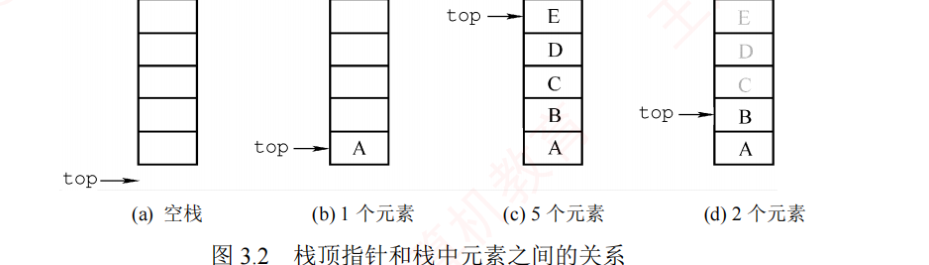
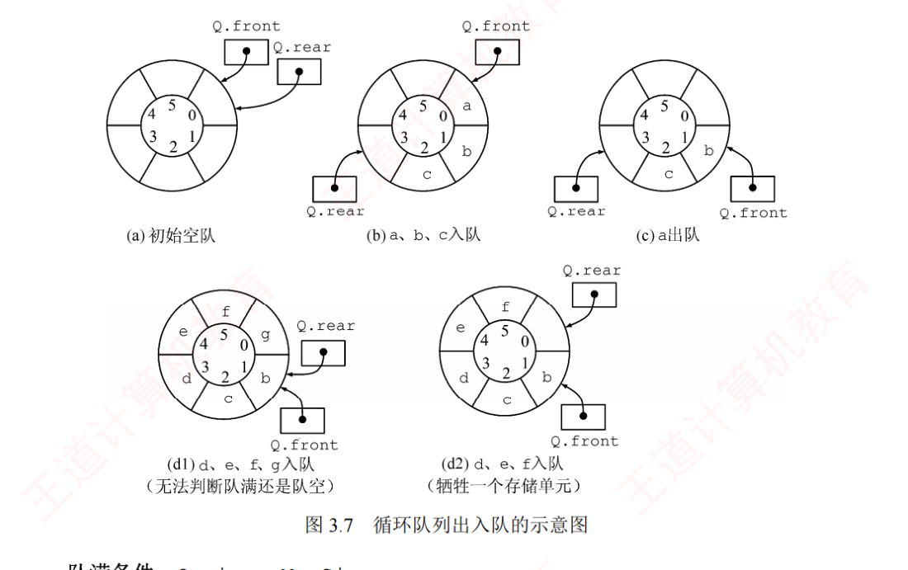
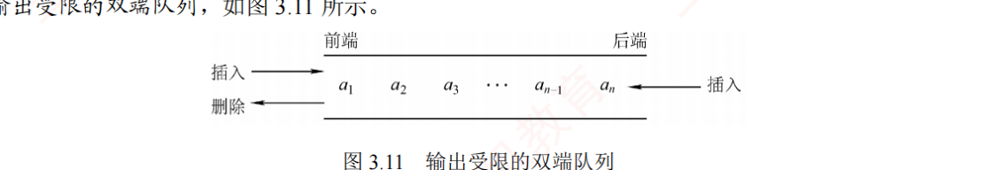
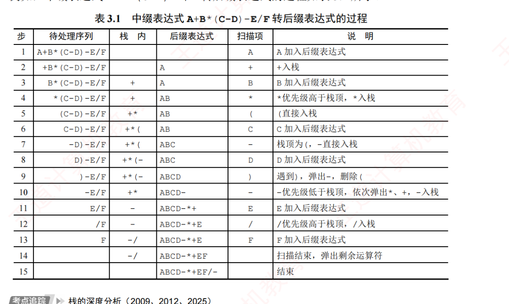
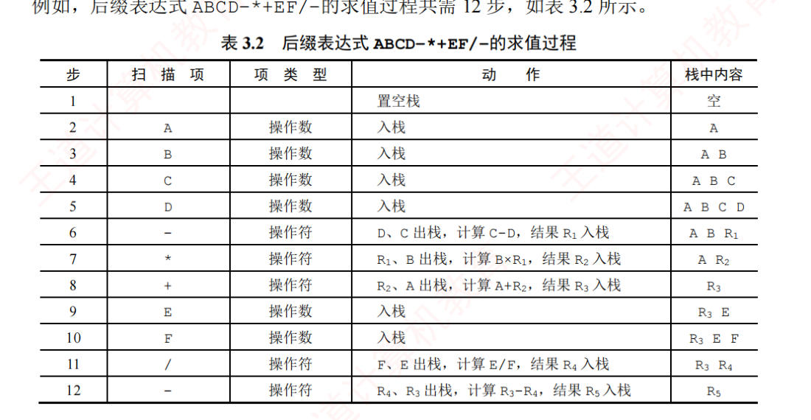
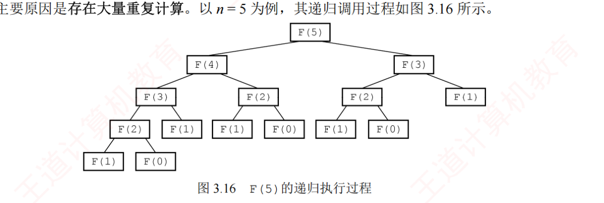
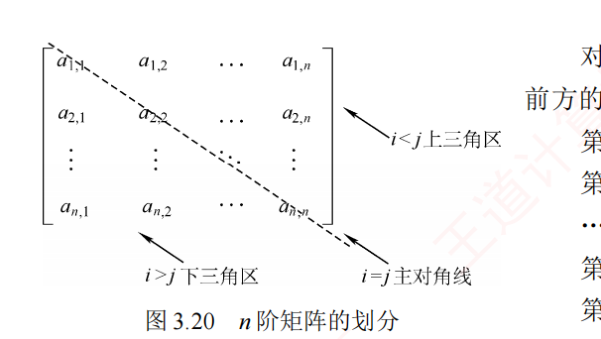
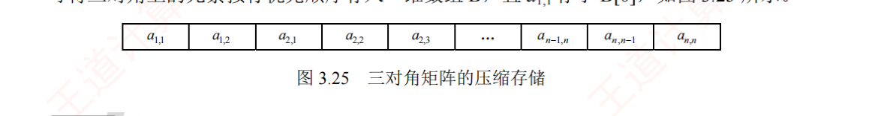

← 返回 408 复盘中心
怎么读这一页： 正文是书上的内容，我只做了
结构重排和取舍 。色块分两个维度——
① 按来源（原有的三种）：
我的补讲 / 挖 ——书上没写或写得太略、但你需要它才能真懂的部分；
必记结论 ——直接决定选择题对错；
陷阱 ——实测最容易做错的地方。
② 按动作（2026-09-01 回炉时新加的两种）：
背景 · 考试不碰 ——虚线灰块，
明确告诉你哪几段可以快速划过 （全是重点＝没有重点）；
知识串联 ——绿块，就地标出
这里和后面哪一章、和组原／OS／网络的哪个概念是同一件事 。
蓝色「挖」块统一按三段写：
书上说 X → 潜台词是 Y → 所以能考 Z ，
其中「能考 Z」全部有
练习系统本章 101 道题（含 27 道统考真题） 作实证，不是凭空推的；
凡标 🐍 的数字都由独立程序复算过。
③ 3.5 节是新增的一节 （原书没有），把散在习题区的
10 道综合应用题 提炼成
七个可默写的模板 ，
其中
2019 统考真题 按「大题三层」写：
💭 思路 （动手前看）→
✍️ 考场卷面 （自己写完再对照）→
📌 批注 （对照完校对）。
看完思路就合上页面自己写，别直接翻卷面。
右侧
📄 p.N 点开跳到原书对应页——它是
溯源锚点 （想看原书排版或多余例题时用），
不是「这里我没写，你自己去看」 ：凡
📄 处的考点，本页正文里都已讲全。
本章配
两个模拟器 ，见文中链接。
📄 p.63
本章定位
考纲内容 ：（一）栈和队列的基本概念 （二）栈和队列的顺序存储结构 （三）栈和队列的链式存储结构 （四）多维数组的存储 （五）特殊矩阵的压缩存储 （六）栈、队列和数组的应用。
王道的复习提示 ：本章通常以选择题形式 考查，题目难度不大，但命题方式较为灵活。其中，栈（如入栈/出栈过程、出栈序列的合法性）和队列的操作及其特征是考查重点 。由于二者都是线性表的典型应用与推广，也常出现在算法设计题中。
我的补讲 · 本章是「纯选择题章」，别把时间花在默写代码上
实测本章 101 道课后题里，选择题 91 道、综合题仅 10 道 ，却含 27 道统考真题 ——比第 2 章还多。分布是：3.1 栈 31 题 / 3.2 队列 24 题 / 3.3 应用 20 题 / 3.4 数组与矩阵 16 题。「30 秒秒判」的手速上 ，而不是默写栈/队列的完整代码（那些只要求懂判空判满 ）。王道自己在章末也这么说：算法题里栈和队列通常只是辅助工具 ，声明和核心操作写两行就够，不必完整实现所有接口。
挖 · 27 道真题按年份铺开：2009–2025 一年不落 ，而且是「零缺口五章」里最薄的一章
书上说 ：本章「通常以选择题形式考查，题目难度不大，但命题方式较为灵活」。
潜台词是 ：「难度不大」＝
不会拿它来拉开分差 ，「命题方式灵活」＝
但每年都会来拿走你 2 分 。
把 27 道真题按年份铺开一数就清楚了——
2009 到 2025 十七年，一年不落 ：
年份 考了什么（本章） 年份 考了什么（本章） 2009 栈容量峰值 · 打印缓冲区＝队列 2018 栈+队列混合序列 · 后缀求值 b op a · 对称矩阵上三角按行 2010 出栈序列（禁连出 3 次）· 输出受限双端队列 2019 循环链式队列设计（本章唯一的综合真题） 2011 以 d 开头的出栈序列计数 · 循环队列初值倒推 2020 Push/Pop 操作串模拟 · 对称矩阵上三角按列 2012 中缀转后缀的运算符栈峰值 2021 输出受限双端队列 · 二维数组地址反推 2013 P₂=3 则 P₃ 有几种取值 2022 入栈序列 / 出栈序列的四句叙述辨析 2014 中缀转后缀的栈快照 · 两端可进出的循环队列判空满 2023 三元组表还需另存什么 2015 递归的系统栈自底向上 2024 中缀转后缀 2016 火车轨道调度 · 三对角矩阵下标 2025 括号匹配的栈容量 · 表达式树 2017 栈的四句叙述辨析 · 稀疏矩阵两种存储结构 合计 27 道 ：3.1 栈 6 · 3.2 队列 6 · 3.3 应用 9 · 3.4 数组矩阵 6
所以能考 ：数据结构八章里做到「十七年零缺口」的一共有
五章 ——
ch3、ch5 树、ch6 图、ch7 查找、ch8 排序 （ch1 缺 10 年、ch2 缺 3 年、ch4 缺 14 年）。
而本章是这五章里最薄的一章 ：
零缺口章 页数 真题 真题/页 综合真题（要写代码的大题） ch3 栈队列与数组 46 27 0.59 1 道 （2019 队列设计，还是「描述型」不是「写算法」）ch5 树与二叉树 70 43 0.61 多道，且是 13 分算法设计题主场 ch6 图 70 41 0.59 多道 ch7 查找 67 41 0.61 较少 ch8 排序 62 42 0.68 较少
⟹
结论很硬：本章是五个「每年必考章」里投产比最高 的一个 ——
页数只有四大章的 2/3，真题密度却持平，而且几乎全是选择题（91 选 + 10 综，综合真题只有 1 道） 。
平均每年考
1.6 道 ≈ 3 分 ，且这 3 分基本不需要写代码。
所以它不是「可以最后再看」的章，而是「应该先拿下」的章 ；
而且它的 27 道真题
只用到四台命题机器 （下一块），过完这四台就等于过完本章。
挖 · 全章只有四台「命题机器」，27 道真题全是从这四台里出来的
书上说 ：栈和队列的操作及其特征是考查重点，数组一节以下标计算为主。
潜台词是 ：这句话太粗。把 27 道真题按
「考场上要做的动作」 而不是按知识点重新归堆，只剩四台机器：
机器 考场动作 吃掉的真题 练到什么程度 ① 模拟器 把过程翻成 Push/Pop 或入队/出队，逐步走，顺手记峰值 2009 · 2010 · 2011 · 2013 · 2018 · 2020 · 2022 · 2012 · 2014 · 2025 30 秒 / 题 ，草稿纸上画栈不出错② 判语义 top / front / rear 各指哪 、数组几格 、下标从 0 还是 1 起 2011 · 2014 · 2016 · 2018 · 2020 · 2021 动笔前必须先把这三件事圈出来 ③ 数格子 「前面完整的行/列有几个」＋「本行/列内第几个」，再按起点 ±1 2016 · 2018 · 2020 · 2021 能现推 ，不背公式 ④ 查配对表 栈还是队列 / 稀疏矩阵存什么 / 叙述辨析 2009 · 2015 · 2016 · 2017 · 2023 考前扫一眼，秒答
所以能考 ：
①②两台机器合起来吃掉 27 道里的 20 道 ，
而它们
都不需要背任何东西，只需要「手上不乱」 ——这就是为什么本章的复习时间该花在草稿纸上而不是记忆卡上。
③ 是唯一需要现推的，④ 是唯一需要死记的。
串 · 🔑 本章是 408 四科里被引用次数最多的一章——后面三科天天在用栈和队列，却都默认你已经会了
→ 组原 ch4.3 程序的机器级代码表示 ：函数调用的栈帧 就是本章 3.3.3 的「递归工作栈」，
只不过组原把它细化成「返回地址 / 保存的寄存器 / 局部变量 / 参数区」四段，且栈从高地址往低地址长 （＝本章 top=n+1 那一列）。→ 组原 ch5.5 多重中断 ：中断嵌套 n 层就要压 n 层现场，「最多允许几重中断」＝本章的栈深峰值 问题。→ OS ch2.2 进程调度 ：就绪队列、阻塞队列全是本章的队列；FCFS 就是纯 FIFO 队列，
多级反馈队列就是「一组队列 + 一个选择规则」。→ OS ch5.3 磁盘调度 ：FCFS/SCAN 都在一个请求队列上做文章。→ 网络 ch3 / ch5 滑动窗口 ：发送窗口在实现上就是一个循环队列 （缓冲区绕回 + 两个指针），
「窗口满了不能再发」＝本章的判满条件。一句话记牢 ：本章教的不是四个数据结构，是后面三科共用的四个零件 ——
这一章欠的债，会在组原的栈帧题、OS 的调度题、网络的窗口题上一起找上门。
背景 · 考纲六条里，第（一）（三）两条几乎不单独出题
考纲列的六条中，（一）栈和队列的基本概念 与（三）栈和队列的链式存储结构 这两条，
十七年里没有单独成题过 ——概念题都以「叙述辨析」的形式混在别的题里（2017、2022），
链式存储只在「选哪种链表最合适」这类题里露一面。读到链栈那一节可以明显加速 ——王道自己在章末也说「考研真题中链式栈出现的概率远低于顺序栈」。
3.1 栈
📄 p.63–64
考点追踪：栈的特点 2017 · 出入栈序列的分析 2010、2011、2013、2018、2020、2022 · Catalan 数的应用 2015
栈（Stack） 是仅允许在一端进行插入和删除操作 的线性表。
栈顶（Top） ：允许进行插入和删除操作的一端；栈底（Bottom） ：固定不变、不允许进行插入和删除操作的另一端；空栈 ：不含任何元素的栈。
设 S = (a₁, a₂, a₃, a₄, a₅)，元素按 a₁…a₅ 的顺序入栈，则出栈顺序为 a₅, a₄, a₃, a₂, a₁。栈的操作特性可概括为后进先出（Last In First Out, LIFO） 。
挖 · 「栈是操作受限的线性表」这一句，命题人拿它出了四种问法
书上说 ：栈是仅允许在一端进行插入和删除操作的线性表。
潜台词是 ：这句话里有
三个可攻击的点 ——「线性表」（逻辑结构）、「一端」（位置受限）、「插入和删除」（运算受限）。
命题人每次只动其中一个词，就造出一道新题：
动了哪个词 造出来的题 正确答案的落点 逻辑 vs 存储 「栈和队列具有相同的（ ）」（3.1-1） 逻辑结构 ——都是线性表；存储可顺序可链式，不固定 线性 vs 非线性 「栈是一种（ ）」（3.1-2） 限制存取点的线性结构 ——两条判据同时命中才对基本 vs 派生操作 「哪个不是栈的基本操作」（3.1-3） 删除栈底元素 ——它能用反复出栈间接 实现，但不是基本运算受限位置 「栈和队列的主要区别」（3.2-1） 插入删除的限定位置不同 ——不是逻辑结构不同，也不是存储不同
所以能考 ：这四道题的
错误选项全是同一个套路造的 ——
拿「存储结构」冒充「逻辑结构」 （3.1-1 的 C、3.1-2 的 A/B、3.2-1 的 B）。
⟹ 遇到「栈/队列的……相同/不同」，
第一反应先把「逻辑」和「存储」两个词分开 ，答案基本就出来了。
另外 2017 真题的 Ⅳ「栈允许在其两端进行操作」也是同一刀：
栈只有栈顶一端 ，两端那是双端队列。
串 · 🔑 栈的 LIFO 不是数据结构的性质，是「嵌套」这件事的性质——四科里凡是「嵌套」都用栈
→ 组原 ch4.3 函数调用嵌套 ⟹ 栈帧 （后调用的先返回）。→ 组原 ch5.5 中断嵌套 ⟹ 现场保护栈 （后响应的中断先返回）。→ OS ch1.3 系统调用陷入内核 ⟹ 内核栈 ；OS ch3 进程映像里的栈区 就是这个。→ 本章 3.3.1 括号嵌套 ⟹ 括号匹配栈。→ ch5 / ch6 递归遍历树、DFS 走图 ⟹ 递归工作栈或显式栈。一句话记牢 ：看到「嵌套 / 后开始的先结束」就用栈，看到「排队 / 先来的先走」就用队列 ——
这一条判据能替你答对本章 3.3 节的全部配对题，也能替你答对组原和 OS 里的对应题。
必记结论 · 栈的数学性质（卡特兰数）
n 个不同元素按固定次序入栈时，
可能的出栈序列总数为
Cn = (1/(n+1))·C(2n, n)
该数列称为
卡特兰（Catalan）数 。
n = 1→1，2→2，3→5，4→14，5→42，6→132 ，背前五个够用。
有约束时卡特兰失效 ，改用「固定骨架再数落点」（如 2011 真题：5 个元素以 d 开头 → 骨架 d,c,b,a 定死，e 有 4 个落点 → 4 种）。
挖 · 卡特兰数只值 1 分，真正被考的是它的三个变体
书上说 ：n 个不同元素依次入栈，可能的出栈序列数为卡特兰数 C(2n,n)/(n+1)。
潜台词是 ：
裸考卡特兰数的题一共只有一道 （3.1-13，n=3 答 5）。
命题人真正喜欢的是
「加一个约束，让卡特兰数失效」 ——因为这样才能考出「你到底会不会模拟」：
题 约束 卡特兰还能用吗 正解怎么来 3.1-13 无 ✅ 直接报 5 背 1,2,5,14,42,132 3.1-15 以 cd 开头（abcd） ❌ cd 定死后栈里只剩 ba，只能逆序 ⟹ 1 种 （cdba） 3.1-综1 以 CD 开头（ABCDE） ❌ 骨架 CD…B…A，E 有 3 个落点 ⟹ 3 种 2011 以 d 开头（abcde） ❌ 骨架 d,c,b,a 定死，e 有 4 个落点 ⟹ 4 种 2013 P₂=3 ❌ P₃ 可取除 3 外的全部 ⟹ n−1 种
所以能考 ：
三道计数题（3.1-15 / 综1 / 2011）用的是同一个动作 ——
先把约束翻译成「已经压在栈里的那几个必须逆序出」的骨架，再数还剩几个自由元素、每个有几个落点 。
数落点时最容易漏的是
骨架末尾之后也算一个合法位置 （2011 的
dcbae 就是 e 落在最后）。
🐍 全部四组已用程序穷举核对：cd 开头 1 种、CD 开头 3 种（CDBAE/CDBEA/CDEBA）、d 开头 4 种（decba/dceba/dcbea/dcbae）。
串 · 🔑 卡特兰数在数据结构里出现两次 ，第二次在第 5 章——而且是同一个数
→ ch5 二叉树 n 个结点能构成多少种不同形态的二叉树？答案也是卡特兰数
（n=3 时 5 种、n=4 时 14 种、n=5 时 42 种，与出栈序列数逐项相等 ）。一棵二叉树的「先序遍历 + 中序遍历」恰好对应一组「入栈 + 出栈」序列 ——
先序遍历的顺序就是入栈顺序，中序遍历的顺序就是出栈顺序。所以「合法出栈序列」和「二叉树形态」是一一对应的。 → ch5 由此还能推出 ch5 的一个常考结论：先序序列和中序序列可以唯一确定一棵二叉树 ，
而先序＋后序不能 ——因为后序对应不上「出栈」这个动作。一句话记牢 ：1,2,5,14,42,132 这串数背一次，本章和第 5 章各能省一次推导 。
🐍 已用程序对 n=1..6 双向核算：出栈序列数与二叉树形态数完全一致。
背景 · 卡特兰数的推导过程不用看
书上（和很多资料）会给一段「反射法 / 格路计数」的组合证明。统考从未考过推导 ，
出栈序列的 n 又永远只有 3~6，把前六个数背下来即可 。这一段扫过去。
3.1.2 栈的顺序存储结构
📄 p.64–66
考点追踪：出入栈操作的模拟 2009
#define MaxSize 50
typedef struct{
ElemType data[MaxSize]; // 存放栈中元素
int top; // 栈顶指针
}SqStack;

图 3.2 栈顶指针和栈中元素之间的关系（裁自原书 p.65）——(d) 中 C、D、E 虽仍留在存储单元里，但 top 已指向新栈顶，它们已不属于栈的内容
必记结论 · 做题第一件事：判 top 的语义
同一道题换个 top 约定，答案完全相反。
先看初值 ，判断 top 指的是「栈顶元素本身」还是「下一个空位」，以及栈往高地址还是低地址长：
初值 含义 入栈 出栈 栈空 / 栈满 top=-1指栈顶元素 S.data[++S.top]=xx=S.data[S.top--]top==-1 / top==MaxSize-1top=0指下一空位 S.data[S.top++]=xx=S.data[--S.top]top==0 / top==MaxSizetop=n+1从高往低灌 S.data[--S.top]=xx=S.data[S.top++]—
口诀：
指元素就「先动指针后存」，指空位就「先存后动指针」 。栈长恒为
S.top+1（top 指元素时）。
挖 · 3.1-4 / 3.1-5 / 3.1-6 是同一个模子刻出来的三道题，答案却是 C / B / A
书上说 ：
top=-1 时入栈写
S.data[++S.top]=x。
潜台词是 ：
书上只给了一种约定，而考场上三种约定各出过一次，且四个选项永远是那四个写法的排列组合 。
把三道题并排放，就能看见命题人是怎么只改一个数字造出三道题的：
题 题干给的初值 它在说什么 入栈写法 答案 3.1-4 a[n]，top=-1下标 0 起 ＋ top 指元素 ＋ 向高地址长 a[++top]=xC 3.1-5 data[1..n]，top=1下标 1 起 ＋ top 指下一空位 ＋ 向高地址长 data[top++]=xB 3.1-6 data[1..n]，top=n+1下标 1 起 ＋ top 指元素 ＋ 向低地址长 data[--top]=xA
所以能考 ：
三种约定的判别只需要一步——把「第一个元素入栈后 top 应该等于多少」算出来 。
3.1-4 要 top 变成 0（下标 0 起的第一格），只有
++top 能从 −1 变 0；
3.1-5 要元素落在
data[1]，初值 top 已经是 1，所以必须
先存后动 ；
3.1-6 要元素落在
data[n]，初值 n+1，只有
--top。
⟹
不背表，就问一句「第一个元素该落在哪一格」 ，剩下的自动定死。
挖 · 「栈顶指针最后指向哪」这类题，书上没讲的那一列是：只看净入栈数
书上说 ：每入栈 top 加 1，每出栈 top 减 1。潜台词是 ：这两句话合起来意味着 top 的最终值只和「Push 次数 − Pop 次数」有关，与顺序完全无关 ——
而书上从来没有把这句话单独说出来，导致大部分人真的去逐步模拟。Push Push Pop Push Pop Push Pop Push，
Push 5 次、Pop 3 次，净 +2 ⟹ 1000H + 2 = 1002H，五秒出答案 ，不必画那 8 步。所以能考 ：这一列的反面 才是真考点——
凡是问「栈里最多 有几个元素 / 栈容量至少多大」的题，净值就完全没用了，必须逐步走并记峰值 （2009 真题）。
⟹ 一句判据：问「最后」看净值，问「至少 / 最多」记峰值 。两类题面在本章各出现过一次，别混。
陷阱 · 王道自己在 p.72 用一个【注意】框警告过：指针定义不唯一
原书 p.72 在第 25 题之后专门放了一个注意框：「栈顶、队头与队尾的指针的定义是不唯一的，做题时务必仔细审题和思考。」 它同时管着 3.1（top）、3.2（front/rear）两节的全部计算题 ，
而这两节合起来贡献了本章 27 道真题里的 12 道。落到动作上就是三件事，动笔前必须先做完 ：元素本身 还是下一个空位 （或前一个位置）？一共几格 ？A[0..n] 是 n+1 格，A[n] 是 n 格，A[21] 是 21 格。0 还是 1 起？这三问答完再动笔，本章的计算题基本不会错；不答就动笔，错的就是这三处。
串 · 🔑 顺序栈就是「只让你碰最后一个元素」的顺序表——ch2 的结论一条不改地继承过来
→ ch2 顺序表 顺序栈的 data[MaxSize] ＋ top，
与顺序表的 data[MaxSize] ＋ length 是同一个结构 ：栈长恒为 top+1（top 指元素时），
就是顺序表的 length 。所以顺序表的三条结论直接可用：随机存取 O(1)、容量固定会满、不需要额外指针空间 。→ ch2 顺序表「表尾插入删除是 O(1)、其余位置是 O(n)」——栈干脆规定只在表尾操作 ，
于是所有操作都变成 O(1) 。这就是「操作受限」换来的红利。 → 组原 ch4.3 硬件栈也是这么做的：一段连续内存 ＋ 一个 SP 寄存器。一句话记牢 ：受限不是缺陷，是用能力换效率 ——本章四个结构（栈、队列、双端队列、数组）全都是这笔买卖。
共享栈
图 3.3 两个顺序栈共享存储空间（裁自原书 p.66）——栈底分置数组两端，栈顶向中间延伸
0 号栈栈顶指针 top0 初值 −1（0 号栈空），1 号栈栈顶指针 top1 初值 MaxSize（1 号栈空）；栈满条件为 top1 − top0 == 1（两栈顶相邻） 。0 号栈入栈时 top0 先加 1 再赋值，1 号栈入栈时 top1 先减 1 再赋值，出栈相反。
共享栈能更高效地利用存储空间，两个栈的空间可动态调节，仅当整个数组被占满时才发生栈溢出 。其存取数据的时间复杂度均为 O(1)，对存取效率无影响。
挖 · 共享栈的判满：书上给了一个方向，考场上考的是另一个方向 怎么办
书上说 ：0 号栈 top0 初值 −1、1 号栈 top1 初值 MaxSize，栈满条件 top1 − top0 == 1。潜台词是 ：这个式子里谁减谁是有讲究的 ——右边的指针恒大于左边的指针 ，所以是「右 − 左 == 1」。
3.1-25 的四个选项里，top2−top1==1（对）和 top1−top2==1（错）只差一个方向，
这就是这道题唯一的分辨点 ；另两个选项 top1==top2 是「两栈顶重合」——那意味着同一格被两个栈同时占用 ，
在「相向增长」的模型里根本到不了这一步（满的那一刻它们只是相邻）。所以能考 ：王道在第 25 题的答案里还留了一道思考题：「当 top1 初值为 0、top2 初值为 n−1 时，栈满条件是什么？」
把语义翻一遍就有了——此时两个指针都指下一个空位 ，
左栈从 0 往右写、右栈从 n−1 往左写，没有空位可写＝ top1 > top2，即 top1 − top2 == 1 （方向和上面正好相反）。
⟹ 别背式子，画一条数轴 ：把两个指针点上去，问「中间还塞得下一个元素吗」，答案自己就出来了。
串 · 🔑 共享栈的「两端相向增长」，是 OS 进程地址空间的原型
→ OS ch3.1 进程的内存映像里，堆区从低地址往高地址长、栈区从高地址往低地址长 ，
中间那块空闲区被两者共享——这就是一个共享栈 ，「堆栈相撞」＝共享栈的栈满。→ OS ch3.1 可变分区分配里的「最佳适配 / 最坏适配」要解决的也是同一个矛盾：
与其给每块固定配额（各分一半，一边先满另一边还空着），不如让它们共用一池 ——
共享栈「仅当整个数组被占满时才溢出」讲的就是这个红利。→ 组原 ch4.3 栈帧从高地址往低地址压，正是本章 top=n+1 那一行的实物版。一句话记牢 ：「两个东西轮流用一块空间，比各分一半更抗溢出」——这条思想在 OS 里叫动态分区，在本章叫共享栈。
串 · 🔑 共享栈 vs 链栈，是 ch2「顺序 vs 链式」那张表的原样重演
→ ch2 顺序表 vs 链表的四条对比，换成栈之后逐条对应：
顺序栈随机存取但会满、链栈不会满但每个结点多花一个指针 ；
「预估不到元素个数就用链式」这条选择依据，在 ch2、本章、ch6（邻接矩阵 vs 邻接表）里各出现一次 。→ OS ch3.1 这也是 OS 里连续分配 vs 离散分配 的分水岭：连续分配＝顺序栈（快但有外部碎片），
分页＝链式思路（不会碎但要查页表）。一句话记牢 ：「顺序 = 用连续换速度，链式 = 用指针换弹性」，这一条判据本书要用八章。
3.1.3 栈的链式存储结构（链栈）
采用链式存储的栈称为链栈，优点是便于动态分配存储空间、不存在栈满溢出的问题 ，且在多栈共存的场景下能更灵活地利用内存。通常用单链表 实现，并规定所有操作均在链表的表头进行 ；一般约定链栈不带头结点 ，栈顶指针 Lhead 直接指向栈顶元素。
typedef struct LinkNode{
ElemType data;
struct LinkNode *next;
}*LiStack;
// 入栈（头插两步）：s->next = top; top = s;
// 出栈（先读后删）：x = top->data; p = top; top = top->next; free(p);
挖 · 链栈为什么「不带头结点」——这决定了 3.1-10 / 3.1-11 两道题的答案
书上说 ：一般约定链栈不带头结点，栈顶指针
top 直接指向栈顶元素。
潜台词是 ：
带不带头结点，会让入栈/出栈的语句整体错一位 ——而这正是命题人设置干扰项的地方：
约定 入栈 出栈 不带头结点 （本章约定）x->next = top; top = x; 3.1-10 选 C x = top->data; top = top->next; 3.1-11 选 D 带头结点（干扰项来源） x->next = top->next; top->next = x;（3.1-10 的 B）top = top->next; x = top->data;（3.1-11 的 C）
所以能考 ：两道题各有一个「
看起来只是顺序不同 」的错误选项，实质是
换了一套约定 。
记法只要一条：
top 指的是谁，就直接对谁下手 ——
不带头结点 ⟹ top 就是栈顶元素 ⟹ 取值写
top->data、摘链写
top=top->next，
而且必须先取值后摘链 （3.1-11 的 C 先移了 top，取到的是第二个元素）。
这和第 2 章「删除结点前先用 q 记住它」是同一条纪律：
指针一动，原来那个东西就找不回来了 。
挖 · 「选哪种链表最合适」——三道题、一把刀：能不能 O(1) 摸到你要动的那一端
书上说 ：（3.1-9 / 3.2-12 / 3.2-13 三题散落在两节里，书上没有把它们放在一起。）
潜台词是 ：这三道题的题干长得很吓人（「只有表头指针没有表尾指针的单向循环链表」……），
但
判据只有一条：把这个结构要做的操作列出来，问每一步能不能 O(1) 完成 ：
题 要做的操作 答案（最不适合 / 最适合） 为什么 3.1-9 只在表头 插、删（但要维持循环 ） 最不适合：只有头指针的单向循环链表 动了表头就要改表尾的 next，从头指针找尾要绕一圈 O(n) 3.2-12 表头 删（出队）＋表尾 插（入队）最适合：带首尾指针的非 循环单链表 两端都 O(1) 就够了；再加「循环」是多余维护成本 3.2-13 同上 最不适合：只有队首指针的非循环双链表 非循环 ＋ 无尾指针 ⟹ 找尾必须走全程 O(n) ；双链在这里救不了它
所以能考 ：
「循环」和「双向」都不是越多越好 ——它们只在
「你缺的那一端刚好能靠它一步摸到」 时才有价值。
速判口诀：
只有头指针 + 循环 ⟹ 能一步到尾（尾的 next 是头，反过来要绕）；只有尾指针 + 循环 ⟹ 能一步到头（rear->next 就是头）；双向 ⟹ 能就近取前驱。
3.2-13 的 A 之所以最差，就是
三样红利一样没占 。
背景 · 链栈那一整套函数（初始化 / 判空 / 进栈 / 出栈 / 读栈顶）不用默写
书上把链栈的五个函数完整列了一遍。统考十七年没考过链栈的代码填空 ，
王道自己在章末也写明「考研真题中链式栈出现的概率远低于顺序栈」。只需要记住 4 行 ——入栈两句、出栈两句（就是正文上面那段），
别的扫过去。省下来的时间放到出栈序列的手上功夫上。
我的补讲 · 出栈序列题：一个口诀 + 一台机器
秒杀口诀 ：
先入栈的元素若晚出，必须逆序出现 。扫目标序列，发现「某元素之后，比它先入栈的那些元素
升序 出现」即非法。
例：入栈 a,b,c,d，判
dcab——d 第一个出，说明 abc 全压在栈里，其后必须严格 c,b,a；给的是 a,b（升序）→
非法 。
带约束时口诀失效 （如 2010「不允许连续 3 次出栈」），回到
模拟 ：逐个「点名」，要出谁就把它之前的压进去，能弹则弹。
🔧
手上跑不确定？用这台机器 ：
出栈序列判定器 ——单步模拟卡在哪一步、枚举全部合法序列对照卡特兰数、自动报
栈深峰值 （=「栈容量至少多大」），还能加「不许连续 k 次出栈」的约束。
挖 · 「先入晚出必逆序」不是口诀，是一句可以两行证完的话——证过一次就再也不会用反
书上说 ：判断出栈序列合法性可以逐步模拟。潜台词是 ：模拟每题要 30 秒，而这条性质能让你 5 秒扫完。它的证明只有两句：① 设 a 比 b 先入栈。若 a 比 b 后出栈，说明 b 出栈的时候 a 还压在栈里，且 a 在 b 下面 。 ② 栈只能从上往下取，所以从此以后，凡是压在 a 上面的元素都必须先于 a 出栈。 结论：在出栈序列里，「入栈更早却出栈更晚」的那一批元素，它们之间的相对顺序必然是入栈顺序的逆序。 所以能考 ：扫目标序列时只找一件事——某个元素之后，比它先入栈的那些元素是不是升序 出现了 cabdef：c 出栈时 a、b 还在栈里（a 在最下），此后必须 b、a；给的是 a、b ⟹ 非法 。d,c,a,b：d 第一个出 ⟹ 其后必须严格 c、b、a；给的是 a、b ⟹ 非法 。DBACE：D 先出 ⟹ 其后 C、B、A 必逆序；给的是 B、A、C ⟹ 非法 。cabdef、dcab、dbace 均不在集合内，其余选项均在。
挖 · 2010 那道「不许连续出栈 3 次」——为什么可以只数「连续逆序段」
书上说 ：出栈序列中出现长度 ≥3 的连续逆序子序列，就说明需要连续出栈 ≥3 次。
潜台词是 ：书只给了这条判据，
没说为什么它是等价 的 ——而不知道为什么，考场上就不敢用。理由一句话：
两次相邻的出栈之间，只要压进去任何一个元素 x，x 就会成为新栈顶，它必须先被弹出，从而挤进输出序列 ——那两次出栈就不再相邻了。
⟹ 反过来：
输出序列里一段连续的逆序，就恰好 对应一段连续的 Pop ，一个不多一个不少。
所以能考 ：2010 四个选项
全都是合法出栈序列 （这是这道题的杀招——用「先入晚出必逆序」一个都排除不掉），
唯一的分辨点就是最长连续逆序段的长度：
选项 最长连续逆序段 需要连续出栈 违反「不许连出 3 次」？ A dcebfa dc2 次 否 B cbdaef cb2 次 否 C bcaefd ca / fd2 次 否 D afedcb fedcb5 次 是 ⟹ 选 D
🐍 已用程序对四个选项穷举全部可行方案，取「最大连续 Pop 次数」的最小值：A/B/C 均可控制在
2 ，D 无论怎么走都要连出
5 次。
挖 · 六道出栈序列真题并排：题面全不一样，动作只有三个
书上说 ：出入栈序列的分析是本章重点，涉及 2010、2011、2013、2018、2020、2022 六年。
潜台词是 ：这六道题
看起来六个样子，其实只要三个动作 ——判合法 / 数个数 / 走一遍：
年份 题面 动作 关键一步 2010 不许连出 3 次，哪个得不到 判合法（加强版） 四个都合法 ⟹ 改数最长连续逆序段 2011 以 d 开头的序列有几个 数个数 骨架 d,c,b,a ＋ e 的 4 个落点 2013 P₂=3 则 P₃ 有几种取值 数个数 P₃ 可取除 3 外全部 ⟹ n−1 2018 队列 + 栈，哪个输出得不到 判合法 入了栈的必逆序吐出 ⟹ 345612 中 1、2 想顺序出，矛盾 2020 给定 8 步操作串，输出是什么 走一遍 照抄 8 步，弹出 b,c,e 2022 四句叙述哪句对 判合法（反向） 「全压后全倒 ⟹ in 与 out 互为倒序」⟹ D
所以能考 ：
2022 那道纯叙述题，是把前五道题的经验反过来问 ——
A/B 说「不能判断」，可我们明明能模拟判定；C 说「in 与 out 一定不同」，可各入即出时两者相同。
⟹
凡是选项里出现「不能判断 / 一定 / 必须」这三个词，先想一个反例 ，本章的叙述题（2017、2022）全靠这一招。
挖 · 两对「镜像题」：改一个字母，答案从「定死」变成「不确定」
书上说 ：（3.1-17 / 3.1-18 相邻，3.1-20 / 3.1-21 相邻，书上分开解释。）
潜台词是 ：
每一对里只有一个符号不同，而这个符号决定了「有唯一答案」还是「无法确定」 ——
这正是命题人最省事的造题法，也是考场上最容易看走眼的地方：
镜像对 题干差别 答案 为什么差这么多 3.1-17 输出第一个是 n 第 i 个 = n−i+1 第一个就是最后入栈的 ⟹ 前 n 个已全压入 ⟹ 只能严格逆序 3.1-18 输出第一个是 i （任意） 不确定 1..i−1 压在栈里，i+1 之后的还能继续入 ⟹ 自由度极大 3.1-20 P₃ = 1 P₁ 不可能 是 2 P₃ 先出 ⟹ P₂ 必先于 P₁ 出 ⟹ P₁ 至少排第 3 位 3.1-21 P₃ = 3 P₁ 可能 是 2 约束松：P₁=1 或 2 都能凑出 1,2,3,… ⟹ 「可能」成立
所以能考 ：
抓住「第一个出栈的是谁」这一个信息量最大的入口 ——
第一个出栈的元素越靠后（越晚入栈），被定死的东西越多 ：
第一个出的是最后入的 ⟹ 全序列定死（3.1-17）；第一个出的是第 k 个 ⟹ 前 k−1 个的相对顺序定死、其余自由（2011、3.1-19）。
这一条同时解释了 2011 的骨架法为什么成立。
必记结论 · 凡问「栈至少多大 / 栈深多少」，一律 +1/−1 记峰值
把过程翻译成 Push(+1) / Pop(−1)，边走边记录栈内元素数的最大值，这个峰值就是答案。三年真题其实是同一道题：2009 ：由出队序列 bdcfeag 反推栈容量 至少多大 → 峰值 3 （队列不改序，出栈序列就是它）2012 / 2014 ：中缀转后缀过程中的栈深 / 栈内快照 2025 ：括号匹配的栈容量 3 → 即可承受的最大嵌套深度 （同时未闭合的括号数）
串 · 🔑 「栈深峰值」这个动作，在组原和 OS 里各有一个一模一样的题型
→ 组原 ch5.5 多重中断 ：允许 n 重中断，就要能保存 n 层现场——
「同时未返回的中断数」＝本章的「同时在栈里的元素数」，问「最多几重」就是问栈深峰值 。→ 组原 ch4.3 递归函数的栈空间 ：递归深度 d ⟹ 占用 d 个栈帧，
栈溢出（stack overflow）就是「峰值超过了栈段大小」。→ OS ch3.1 进程栈区的大小上限、→ ch5 二叉树递归遍历的空间复杂度 O(h) 、
→ ch8 快速排序最坏 O(n) / 平均 O(log₂n) 的空间——全都是同一个「峰值」在说话 。一句话记牢 ：「递归的空间复杂度 = 最大递归深度 × 每层栈帧」 ——
这句话书上没有明写，但 ch5 的 O(h)、ch8 的 O(log₂n)、组原的栈溢出全从它来。
串 · 🔑 链栈的入栈出栈，逐字就是 ch2 的「头插法」和「删除首元结点」
→ ch2 单链表 入栈 x->next = top; top = x; ＝ 不带头结点的头插法 ；
出栈 x = top->data; top = top->next; ＝ 删除首元结点 （少了一句 free 而已）。→ ch2 所以 ch2 那条纪律在这里原样有效：指针一动，原来那个东西就找不回来了 ——必须先取值再摘链 → ch2 ch2 讲「头插法建立的链表元素次序与输入相反」——这正是链栈能产生逆序的原因，也是「栈能且只能产生逆序」这句话的链表版证明 。一句话记牢 ：链栈没有一行新代码，全是 ch2 单链表头部操作的复用 ——所以它不值得单独花时间。
3.2 队列
📄 p.76
队列（Queue） 也是一种操作受限的线性表，仅允许在表的一端插入、在另一端删除 。插入称为入队，删除称为出队。操作特性为先进先出（First In First Out, FIFO） 。队头（Front） 是允许删除的一端，队尾（Rear） 是允许插入的一端。
注意：栈和队列均为操作受限的线性表，因此并非所有线性表的操作都适用于它们 。例如，不允许直接访问或修改栈或队列中间的元素——这是由其逻辑特性决定的。
挖 · 「先进先出」有正反两面，3.2-2 的四句判断里有两句是凭空造出来 的
书上说 ：队列的操作特性为先进先出。
潜台词是 ：FIFO 这四个字
只约束「顺序」，不约束「时机」 ——而命题人恰恰在「时机」上无中生有：
3.2-2 的四句 对错 为什么 Ⅰ 最后插入的总是最后被删除 ✅ FIFO 的反面表述 ，等价于 Ⅳ Ⅱ 同时进行插入删除时，插入优先 ❌ 凭空造的「时机」约束 ——FIFO 不管谁先执行Ⅲ 每次删除前必须先做一次插入 ❌ 同上，而且明显荒谬（队非空就能连删） Ⅳ 每次删除的总是最早插入的 ✅ FIFO 的正面表述
所以能考 ：
「先进先出」的正反两句话都对，其余一律怀疑 。
同一把刀在 3.2-3 上再切一次：「允许对队列进行的操作」四个选项里，
排序 / 取最近入队的 / 中间插入 三个都要碰非法位置——
队列合法的动作只有两个：尾进、首出 。
⟹ 概念题的通用解法：
把「合法动作清单」写在草稿纸边上，逐个选项对照划掉 ，比凭语感快也稳。
串 · 🔑 队列的 FIFO 在后面三科里换了六个名字，但公式都一样
→ OS ch2.2 FCFS 调度 ＝纯队列；就绪队列、阻塞队列、多级反馈队列都是「队列 + 一条选择规则」。→ OS ch3.2 FIFO 页面置换 ：淘汰最早调入的页 ⟹ 就是出队。Belady 异常也正是它「不考虑使用情况、只认入队时间」造成的。 → OS ch5.3 FCFS 磁盘调度 ：请求队列先来先服务。→ 组原 ch3.4 Cache 的 FIFO 替换算法 ：换出最早装入的块（与 LRU 对照）。→ 网络 ch4 路由器的输出队列 ：分组排队转发，队满即丢弃（尾丢弃）。→ ch6 BFS 与 → ch5 层次遍历 ：都是「处理这一层的同时把下一层排进队」。一句话记牢 ：后面三科里凡是写着「FIFO / 先来先服务 / 最早调入」的地方，本质都是本章这一个队列 ；
而它们共有的缺点也一样：只认「进来的时间」，不认「用得多不多」 ——这正是 LRU、SCAN、优先级调度存在的理由。
串 · 🔑 栈和队列在「能不能重排」上是一对反义词，后面五章反复用这一条
→ 本章 3.2 / 3.3 队列不改变相对顺序，栈只产生逆序 ——
2018（队列 + 栈）、3.2-18（两个队列）、3.2-综3（两个栈）三道题全靠这一句判死。→ ch5 层次遍历用队列 （同层保序）、非递归的先/中/后序遍历用栈 （要回溯到父结点）。→ ch6 BFS 用队列、DFS 用栈 ——而「DFS 用队列」是命题人最爱设的错误选项 。→ ch8 基数排序 用的是一组队列（保证「稳定性」的正是队列的保序），
快速排序 的非递归版用的是栈（存待处理的区间边界）。一句话记牢 ：要「保序 / 逐层 / 稳定」就用队列，要「回溯 / 逆序 / 深度」就用栈。
3.2.2 循环队列
📄 p.77–78
考点追踪：特定条件下循环队列队头/队尾指针的初值 2011 · 循环队列判空/满的条件 2014
队列的顺序实现需分配一块连续存储单元，并附设两个指针：队首指针 front 指向队首元素，队尾指针 rear 指向队尾元素的下一个位置 。不同教材对 front 和 rear 含义的约定不同 （例如 rear 可能指向队尾元素或其下一位置），这会导致入队和出队操作的具体实现不同。
若只用普通顺序队列，会出现假溢出 ：队列中仅剩一个元素但 rear 已达 MaxSize，此时继续入队会「上溢」，而实际上数组中仍有空闲单元。为解决这一问题引入循环队列 ——将顺序存储空间在逻辑上组织为环状结构，当指针到达数组末尾时自动回到起始位置，通过取模运算（%） 实现。

图 3.7 循环队列出入队示意图（裁自原书 p.78）——(d1) 无法判断队满还是队空，(d2) 牺牲一个存储单元后就能区分
挖 · 「假溢出」这个词是全节的枢纽：它解释了循环队列为什么要牺牲一格
书上说 ：普通顺序队列会出现假溢出——rear 已到 MaxSize 但数组前部仍有空闲。潜台词是 ：把这件事的因果链拉直，后面三条公式就全是被逼出来的，不用背：队头空出来的格子永远收不回 （front 只往后走）⟹ 假溢出；绕回去 （取模）⟹ 循环队列；「front 追上 rear」这一种状态就同时对应了空和满两种情况 （图 3.7 的 d1）⟹ 必须想办法区分；少用一格 （让满永远到不了相等）、加一个计数器 size 、加一个标志位 tag 。所以能考 ：三种判满法不是三个要背的公式，而是同一个问题的三种成本 ——
牺牲一格＝花 1 个元素的空间；size＝花一个整型；tag＝只花 1 个 bit 。
知道这条因果链，3.2-9（题干特意写「此外该队列再没有其他数据成员」）就秒答：
既然不许加成员，就只能牺牲一格 ⟹ front==(rear+1)%MaxSize。
那句「再没有其他数据成员」不是废话，是题眼。
挖 · 数格子是本节的第一杀手：三道题的分辨点全在「数组到底几格」
书上说 ：（书上用
MaxSize 统一写，从不提这件事。）
潜台词是 ：
题干写数组的方式有三种，格数各不相同，而模数 M 就等于格数 ——写错模数，后面全错：
题干写法 下标范围 格数 = 模数 M 出现在 A[0..n]0 ~ n n+1 3.2-5（答 (rear+1) mod (n+1)）、3.2-10 A[21] / A[MaxSize]0 ~ 20 21 / MaxSize3.2-6（长度 = (3−8+21)%21 = 16 ） A[0..n−1] / A[0..M−1]0 ~ n−1 n / M2011（初值 n−1）、2014（模数用 M，不是 M−1 ）
所以能考 ：
2014 真题的干扰项就是把模数写成 M−1 ——
它利用的正是「最多容纳 M−1 个元素」这句话，
让你把「能装几个」和「有几格」混起来 。
记牢：
模数永远是格数 ，与能装几个无关 ；「牺牲一格」只影响判满条件，不影响取模的除数。
⟹ 动笔第一件事：
在草稿纸上写下 M = ___，把它数对 。
必记结论 · 循环队列的三条公式 + 三种判满法
初始 ：
Q.front = Q.rear = 0；
队首进 1 ：
Q.front=(Q.front+1)%MaxSize；
队尾进 1 ：
Q.rear=(Q.rear+1)%MaxSize。
队列长度（万能公式） ：
(Q.rear − Q.front + MaxSize) % MaxSize
方法 队空 队满 最多存 牺牲一个单元 （最常考）front==rear(rear+1)%MaxSize==frontMaxSize−1 增设 size 成员 size==0size==MaxSizeMaxSize 增设 tag 标志位 front==rear 且 tag=0（出队 致相等）front==rear 且 tag=1（入队 致相等）MaxSize
后两种情形下
front==rear 都可能出现，靠 size / tag 区分队空与队满。
挖 · front / rear 一共有四种约定，长度公式会跟着变——书上只给了一种
书上说 ：front 指队首元素、rear 指队尾元素的
下一个位置 ，长度
(rear−front+M)%M。
潜台词是 ：
这只是四种约定里的一种，而本章的题四种都出现过 。判别只要问一句：
「队里恰好有 1 个元素时，front 和 rear 差几？」 ——差几，长度公式就要补几：
约定 1 个元素时差值 长度公式 能否只靠指针判空满 出现在 front 指队首元素 ，rear 指队尾后一位 （书上） 1 (rear−front+M)%M✅ 可（牺牲一格） 3.2-9 · 2014 front 指队首前一位 ，rear 指队尾元素 1 (rear−front+M)%M（同上）✅ 可 3.2-6 · 3.2-8 · 3.2-10 front、rear 都指元素本身 0 (rear−front+1+M)%M 要 +1 ❌ 不可 ，必须配 size 或 tag 2011 front、rear 都指下一空位 0 同上要 +1（方向相反） ❌ 不可 共享栈那道思考题的队列版
所以能考 ：
第三种约定（都指元素）是 2011 真题的设定，也是唯一一种「空队列时 front==rear，满队列时也可能 front==rear」的写法 ——
所以 2011 只问初值、不问判空满 ，题目自己回避了这个坑。
⟹ 速判法：
不要记四行表，就在草稿纸上画一格、放一个元素，看看两个指针落在哪 ，公式当场就出来了。
挖 · 三种判满法的「代价」那一列，书上没写——但它决定了题目会给你哪一种
书上说 ：牺牲一个单元 / 增设 size / 增设 tag，三种都能区分队空与队满。
潜台词是 ：
题目从来不会问「你喜欢哪种」，只会在题干里暗示只准用哪种 。暗示词就藏在这一列里：
方法 额外开销 能装几个 题干里的暗示词 牺牲一个单元 1 个元素的空间 M−1 「再没有其他数据成员」「最多能容纳 M−1 个元素」 增设 size 1 个 int M 「设有计数变量 / 元素个数域」 增设 tag 1 个 bit M 「希望队列中的元素都能得到利用」「设标志域 tag」（3.2-综1）
所以能考 ：
tag 法是三种里最省的（1 bit 换 1 个元素的空间） ，它的记忆点只有一句：
只有入队可能致满、只有出队可能致空 ⟹ 当 front==rear 时，看最后一次是谁动的手 ：入队致相等就是满（tag=1），出队致相等就是空（tag=0）。
🐍 已用 C 程序实测：MaxSize=5 时 tag 法能连续入队
5 个才报满（牺牲一格法只能入 4 个），全部出队顺序与入队一致。
串 · 🔑 循环队列不是「数据结构的小技巧」，它是所有「有限缓冲区」的标准实现
→ 网络 ch3 / ch5 滑动窗口 ：发送方的缓冲区就是一个循环队列——
「窗口左边界」＝front、「窗口右边界」＝rear ；「发送窗口满了不能再发」＝判满；
收到累计确认后左边界右移＝出队。网络里那个 (rear−front+M)%M 就是本章的长度公式。 → OS ch2.3 生产者—消费者问题 ：有界缓冲区 buffer[n] ＋ in/out 两个下标 ＋ %n，
逐字就是循环队列 ；信号量 empty/full 起的正是「size 计数器」的作用（第二种判满法）。→ OS ch5.3 磁盘的缓冲区 / 缓冲池 、→ 组原 ch7.3 I/O 的数据缓冲寄存器队列 ：同构。一句话记牢 ：「取模绕回 + 两个指针 + 一个判满办法」这三件套，本章学一次，网络和 OS 各用一次 ；
而 OS 用信号量、网络用序号，本质都是在解决「front==rear 时到底是空还是满」这同一个歧义。
陷阱 · 循环队列题错的人 90% 错在没读清两句话
① front / rear 各指哪？ （队首元素？队首前一位？队尾？队尾后一位？）——三种约定的长度公式不同：若
front 和 rear 都指元素本身 ，长度公式要写成
(rear − front + 1 + M) % M，且
无法只靠指针判空满 ，必须配 size 或 tag。
② 数组到底几格？ A[0..n] 是
n+1 格，
A[MaxSize] 是 MaxSize 格——模数 M 就是格数。
③ 凡问「初值应设为多少」就倒推 （2011：要求第一个元素落在 A[0] → 入队后 rear 要指 0 → 初值 n−1）。
🔧
循环队列环形图 ：三种约定 × 三种判满法自由组合，长度公式逐步代入，能亲眼看到「牺牲的那一格」空在哪。
挖 · 2011 与 2014 两道循环队列真题：一道倒着问，一道正着问
书上说 ：（两道真题在书上分列于不同小节，没有并排。）
潜台词是 ：
这两道题是同一节里仅有的两道真题，方向正好相反——一道给结果求初值，一道给约定求条件 ：
年份 题干设定 问什么 怎么做 答案 2011 A[0..n−1]，front、rear 都指元素本身 要让第一个元素落在 A[0] ，初值是多少 倒推 ：入队先 rear=(rear+1)%n 再存，要 rear 变成 0 ⟹ 初值 n−1 ；front 同取 n−1n−1, n−1 2014 A[0..M−1]，end1 指队首、end2 指队尾后一位 ，两端都可进出 ，最多装 M−1 个判空、判满条件 正推 ：最多 M−1 个 ⟹ 牺牲一格法 ⟹ 空 end1==end2、满 end1==(end2+1)%MA
所以能考 ：两条可迁移的规矩——
①
凡是问「初值应设为多少」，一律倒推 ：把「第一次操作之后应该是什么样」写出来，反解初值。这一招在组原的计数器初值题、OS 的信号量初值题上同样好使。
②
「两端都能进出」不改变判空判满 ：2014 特意加了这句话唬人，但取模、相等即空、留一格即满三件事一样没变——
它只是把双端队列的皮套在循环队列上 。
背景 · 循环队列的初始化 / 入队 / 出队三个函数不用默写
书上给了 InitQueue、EnQueue、DeQueue 完整代码。
这三个函数从没被要求默写过 ——真正被考的只有其中的两行 ：
Q.rear=(Q.rear+1)%MaxSize 和 Q.front=(Q.front+1)%MaxSize，以及判空判满那两句。3.2-综1 的 tag 法 （下一节 3.5 有可默写模板），其余扫过。
串 · 🔑 「取模绕回」这个动作，在 408 里至少出现四次
→ ch7 散列表 除留余数法 H(key) = key % p ——同样是「用一个模把无限的下标压进有限的表」，
连「冲突」的概念都对应上了：循环队列里 front 和 rear 撞在一起，散列表里两个 key 撞进同一格 。→ 组原 ch3.4 Cache 的直接映射 ：Cache 行号 = 主存块号 % Cache 行数——逐字同构。→ 网络 ch5 TCP 序号回绕 ：32 位序号用完从 0 重新开始，「怎么区分是旧的还是新的」正是本章「怎么区分空和满」的同一个歧义 （TCP 用 2MSL 等待来消解）。→ OS ch3.1 页内偏移 = 逻辑地址 % 页面大小。一句话记牢 ：取模的本质是「把大空间折进小空间」，代价永远是产生歧义 ——所以每一处都要配一个消歧手段
（循环队列配 tag/牺牲一格，散列表配冲突处理，Cache 配 tag 位，TCP 配 2MSL）。
3.2.3 链式队列
📄 p.79–80
// 入队（尾插三步）
s->data = x; s->next = NULL; // 封尾
Q.rear->next = s; // 挂上
Q.rear = s; // 挪 rear
// 出队：注意最后一个结点的特判
p = Q.front->next; x = p->data;
Q.front->next = p->next;
if(Q.rear == p) Q.rear = Q.front; // 若原队列只有一个结点，删除后变空
free(p);
必记结论 · 链式队列的两个考点
① 出队删到只剩一个结点时，队尾指针也要一起改 （Q.rear=Q.front），否则 rear 悬空——选择题问「链式队列删除操作需要（ ）」答案是「可能 同时修改队头和队尾指针」。链式队列的短板 ：光凭首尾指针数不出长度 ，要遍历。带首尾双指针的非循环单链表 最合适；若只有头指针的循环单链表，入队要绕一圈 → O(n)。
挖 · 链式队列的五道题，考的是同一件事：「rear 这个指针靠不靠得住」
书上说 ：出队时若队列只剩一个结点，删除后要令
Q.rear = Q.front。
潜台词是 ：
链式队列的全部麻烦都来自「rear 是一个额外维护的指针」 ——
顺序队列的 rear 是个下标，怎么算都在；链队的 rear 是个指针，
指着的结点一旦被删就悬空了 。
五道题正好是这件事的五个侧面：
题 问什么 答案 落点 3.2-15 删除操作需要改哪个指针 头尾可能 都要改 只剩一个结点时 rear 会悬空 ⟹ 必须用「可能 」兜住边界 3.2-16 入队要执行什么 rear->next=x; x->next=NULL; rear=x;干扰项少了 封尾 那一句 ⟹ 新队尾的 next 是野指针 3.2-11 链队相比顺序队的缺点 不能靠首尾指针算长度 下标能相减，指针不能 ⟹ 要遍历 O(n) 3.2-14 队头设在链头还是链尾 链头 删表头 O(1)、删表尾 O(n) ⟹ 出队必须在头 3.2-17 只设头指针的循环单链表，入队多快 O(n) 入队在尾，而从头指针找尾要绕一圈
所以能考 ：
三条纪律 ——①
尾插三步：挂上 → 封尾 → 挪 rear ，少一步就出错（3.2-16）；
②
出队删完要问一句「队空了吗」 ，空了就把 rear 拽回来（3.2-15）；
③
链队的长度要遍历 ，凡题目问「O(1) 求长度」，答案一定是顺序队或额外加计数器（3.2-11）。
串 · 🔑 链式队列＝OS 里每一个「队列」的真身：PCB 排的就是链队
→ OS ch2.1 PCB 的组织方式 ：链接方式就是把 PCB 用指针串成就绪队列、阻塞队列——
队首指针 ＋ 队尾指针，出队从头、入队在尾，与本章逐字一致 ；索引方式则相当于顺序队列。→ OS ch2.3 每个信号量 都自带一个阻塞队列，P 操作把当前进程挂到队尾、V 操作从队头唤醒一个——
这就是「尾进头出」。 → OS ch5.3 磁盘请求队列、→ 网络 ch4 路由器输出队列：同构。→ ch6 BFS 的辅助队列在实现上通常直接用顺序循环队列（结点数已知），这也说明「链队 vs 顺序队」的选择只取决于「元素个数事先知不知道」 。一句话记牢 ：元素个数上限已知 ⟹ 顺序循环队列（省指针、能 O(1) 算长度）；上限未知 ⟹ 链式队列（不会满，但长度要遍历）。
串 · 🔑 链式队列的 front / rear，是 ch5 层次遍历和 ch6 BFS 里那个「辅助队列」
→ ch5 二叉树层次遍历 ：根入队 → 队头出队并访问 → 左右孩子入队 → 直到队空。
本章 3.3.4 给的就是这个算法，ch5 会拿它去求树的宽度、层数、完全二叉树判定 。→ ch6 BFS 求非带权图的单源最短路径 ：靠的正是「队列保证按层扩展」。→ ch5 / ch6 两处的实现通常直接用顺序循环队列 （结点数已知、不会超），
只有在结点数未知时才用链队 ——这正好回答了「链队 vs 顺序队怎么选」。一句话记牢 ：本章的队列在 ch5、ch6 里是零件 ，考的时候不会再给你复习一遍——现在就把「尾进头出 + 判空」写熟。
3.2.4 双端队列
📄 p.80–81
考点追踪：双端队列出入队操作的分析 2010、2021
图 3.10 双端队列（裁自原书 p.80）——两端都能插入和删除

图 3.11 输出受限 的双端队列（裁自原书 p.80）——两端可插入，仅允许一端删除
输入受限 的双端队列则相反：仅允许一端插入 ，两端都可删除。若限定双端队列从某个端点插入的元素只能从该端点删除，则它蜕变为两个栈底相邻接的栈 。
挖 · 「输入受限 / 输出受限」这两个名字最容易记反——用一句话钉死
书上说 ：输出受限的双端队列允许在两端插入、仅允许在一端删除；输入受限则相反。潜台词是 ：名字里的「受限」说的是被限制的那个动作 ，不是被限制的那一端 ：输出 受限 ⟹ 出（删除）只能在一端，进（插入）两端随便 ；输入 受限 ⟹ 入（插入）只能在一端，出（删除）两端随便 。所以能考 ：2010 和 2021 两道真题都没有用「输出受限」这四个字 ，而是把定义摊开写在题干里——
「两端均可入队、仅一端可出队」（2010）、「一端仅能入队，另一端既能入队又能出队」（2021）。
⟹ 读题时先把它翻译成「几端能进、几端能出」，再对上名字 ，别指望题目直接给你名字。若限定「从哪端插入的元素只能从哪端删除」，双端队列就蜕变成两个栈底相邻的栈 ——
这句话正是共享栈的另一种说法。
陷阱 · 「最先入的两个必相邻」只能否定 ，不能肯定 ——已找到 4 个反例
输出受限双端队列有一条极好用的必要条件：最先入队的两个元素，在输出序列里必然相邻 。永远贴在一起 ；
后来的元素只能插在整段的外侧 ，插不进它们中间。）但它只是必要条件，不是充分条件。 🐍 程序穷举 1,2,3,4,5 的全部 120 个排列后实测：
输出受限可得集里「1 与 2 不相邻」的序列 0 个 （必要性成立 ✅）；
而「1 与 2 相邻却仍然得不到」的序列有 4 个 ：51243、52143、53412、53421 。用法必须是单向的 ：相邻性一旦不满足，立刻判「不可能」（这就是 2010 和 2021 的解法）；
满足了也不能直接判可能 ，还得真的构造一遍或枚举。
好在选择题问的永远是「不可能得到的是」，这条判据每次都刚好够用 。
必记结论 · 王道原书例题的结论（输入序列 1,2,3,4）
这四个序列是命题人反复取用的素材，直接背：
能由输入受限 得到、但不能由输出受限得到：4, 1, 3, 2
能由输出受限 得到、但不能由输入受限得到：4, 2, 1, 3
两者都不能 得到：4, 2, 3, 1
输出受限的快速判据 ：最先入队的两个元素在输出序列里
必然相邻 （2010 真题：dbcae 中 a、b 被 c 隔开 → 不可能）。
实在拿不准就
暴力枚举 ——元素一般只有 4–5 个，草稿纸上很快。问「既不能由输入受限、又不能由输出受限得到」时
两边都要验 。
挖 · 2010 与 2021：同一道题，隔 11 年原样重考了一次
书上说 ：考点追踪写「双端队列出入队操作的分析 2010、2021」。
潜台词是 ：这两个年份不是「同一考点的两道题」，而是
几乎同一道题 ——
结构相同（输出受限）、元素个数相同（5 个）、问法相同（哪个不可能），连解法都是同一句话：
年份 题干怎么描述结构 答案 一句话解 2010 「两端均可入队，仅一端可出队」 C d,b,c,a,e 最先入的 a、b 被 c 隔开 ⟹ 不可能 2021 「一端仅能入队，另一端既能入队又能出队」 D 4,1,3,2,5 最先入的 1、2 被 3 隔开 ⟹ 不可能
🐍 已用程序枚举输出受限双端队列的全部可达序列核对：
dbcae 与
41325 均不可达，各自另三个选项均可达。
所以能考 ：
本章还有一组这样的「隔年重考对」——2016 与 3.4-6 的三对角、2018 与 2020 的对称矩阵（改一个「行/列优先」） 。
⟹
结论很直接：本章的真题复用率极高 ，把 27 道真题吃透，等于把这一章未来会考的题也吃掉了大半。
挖 · 「两个队列」和「两个栈」能力完全不同——3.2-18 与 3.2-综3 是一对照妖镜
书上说 ：（3.2-18 在选择题里、3.2-综3 在综合题里，书上不相邻。）
潜台词是 ：
把它们并排，就能看清「栈能重排、队列不能重排」这条底线 ：
题 工具 能做到什么 为什么 3.2-18 两个队列 只能把输入分成两组 ，每组内部顺序不变 ；5,2,3,4,1 做不到 队列不改序 ⟹ 5 一旦先出，剩下的 1,2,3,4 只能原序跟出 3.2-综3 两个栈 能完整模拟一个队列 （LeetCode 232 原题） 栈把顺序反一次，倒两次＝不倒 ，负负得正恢复 FIFO 3.2-综2 一个栈 + 一个队列 能把队列整体逆置 过一遍栈就翻面
所以能考 ：三条能力边界，记死——
①
队列永远不改变相对顺序 ，所以「几个队列」也造不出逆序（3.2-18、2018 真题都靠这句话）；
②
栈能且只能产生逆序 ，所以两个栈可以模拟队列，而
两个队列模拟栈要 O(n) 一次倒腾 ；
③ 双栈模拟队列的
唯一红线 ：
S2 非空时绝不能把 S1 倒过去 ——一倒就把新元素压到老元素上面，顺序全乱。
🐍 已用 C 程序与真队列做 10 万次随机入/出对拍，双栈实现全程 FIFO 一致。
背景 · 图 3.10 / 图 3.11 只要记两句话，不必记图
书上两张双端队列示意图，信息量其实只有两句：双端队列两端都能插能删 ；
受限型是在其中一个动作上砍掉一端 。4,1,3,2 、输出受限得 4,2,1,3 、两者皆不可得 4,2,3,1 ）——
它们值得记，但记的方式是「见过就眼熟」而不是背 ：考场上真遇到，4~5 个元素直接枚举更快也更稳 。
🐍 三个结论已用程序逐个核实无误。
串 · 🔑 双端队列是「栈 ⊂ 双端队列 ⊃ 队列」的统一体——记这张包含关系图比记三个结论省事
→ 本章 把双端队列的四个动作（头插、尾插、头删、尾删）砍掉两个，就退化成别的结构：尾插 + 尾删 ⟹ 栈 ； · 只留尾插 + 头删 ⟹ 队列 ；删 ⟹ 输出受限 的双端队列； · 砍掉一个插 ⟹ 输入受限 的双端队列。所以它们的「可得序列集合」有严格的包含关系：栈 / 队列 ⊂ 受限双端队列 ⊂ 双端队列 ⊂ 全排列 ——
这解释了为什么本章的题永远问「不可能 得到的是」：能力越强的结构，反例越难找，只能反着问。→ OS ch2.2 多级反馈队列 用的是「一组队列 + 优先级」，
而抢占式调度 要把被打断的进程放回队首 而不是队尾——那一刻它用的就是双端队列。一句话记牢 ：受限程度越高，能产生的序列越少；考题总是让你在「更弱的结构」里找它做不到 的那一个。
3.3 栈和队列的应用
📄 p.90
3.3.1 括号匹配
算法思想：① 初始化空栈，顺序扫描括号序列；② 遇左括号入栈，表示新增一个待匹配的期待，且其优先级最高；③ 遇右括号则检查栈是否为空：若栈非空且栈顶左括号与当前右括号匹配，则弹出栈顶完成一次匹配，否则序列非法、算法终止；④ 扫描结束时若栈为空则合法，否则存在未匹配的左括号，非法。
必记结论 · 括号匹配的三条判死点
① 右括号来时栈空 → 失配；② 弹出的左括号类型不匹配 → 失配；③ 扫完栈非空 → 失配。2025 真题变体 ：给定栈容量，问哪个序列处理不了 → 栈容量 = 可承受的最大嵌套深度 ，逐项数「同时未闭合的括号数」。
挖 · 括号匹配的三条判死点，对应命题人能造的三种「非法串」
书上说 ：遇左括号入栈；遇右括号若栈空或类型不符则非法；扫完栈非空则非法。
潜台词是 ：
这三条不是「三个要检查的地方」，而是非法串只有这三种做法 ——
出题人手上没有第四种材料：
判死点 非法串长什么样 直觉说法 ① 右括号来时栈空 )( 、 ][右括号来早了 （还没人欠它）② 弹出的左括号类型不符 ([)]交叉了 （括号必须严格嵌套 ，不能像标签那样交叉）③ 扫完栈非空 (()左括号有剩 （有人的账没还）
所以能考 ：
② 是最值钱的一条 ——它说明
括号序列必须严格嵌套，不允许交叉 ，
而「嵌套」正是栈存在的全部理由（见 3.1 那块串联）。
🐍 模板已用 C 实测：
{[()]} ✔、
([)] ✘（类型不符）、
(() ✘（栈非空）、空串 ✔。
⟹ 写算法时
别忘了 ① 那个「栈空判断」 ：王道给的参考代码直接
Pop(S,e) 而没先判空，
严格说来遇到
) 开头的串会出错，
自己默写时补一句 if(StackEmpty(S)) return false; 更稳 。
挖 · 2025 那道题把括号匹配和「栈容量」焊在一起，答案是一个新概念：最大嵌套深度
书上说 ：（书上讲括号匹配算法，从不提栈要多大。）
潜台词是 ：
括号匹配栈里同时存的，是「已经出现但还没闭合」的左括号 ——
所以栈的峰值 = 表达式的最大括号嵌套深度 ，与括号
总数 无关。
2025 给栈容量 3，就是问「哪个选项的嵌套深度超过 3」：
选项 最深处 深度 能否处理（容量 3） A (a+[b+(c+d)/e]+f)+g-h ( [ (3 ✅ B [a*((b+c)/(d-e)+f/g)-h] [ ( (3 ✅ C [a*(b-(c-d)*e/(f+g))-h] [ ( (3 ✅ D [a-(b+[c*(d+e)-f]+g+h)] [ ( [ (4 ❌ ⟹ 选 D
🐍 四个选项的最大嵌套深度已用 C 程序逐字符扫描核算：
3 / 3 / 3 / 4 。
所以能考 ：
考场上的动作只有一个——从左往右扫，遇左括号 +1、遇右括号 −1，记最大值 ，
不要去数括号对数，也不要看运算符 。这与 3.1 那块的「Push +1 / Pop −1 记峰值」是
同一个动作 ，
只不过换了一层皮：2009 那道穿的是「队列」的皮，2025 这道穿的是「括号」的皮。
串 · 🔑 「最大嵌套深度」这个量，组原和 OS 里各有一个直接对应的考点
→ 组原 ch5.5 多重中断的最大重数 ：允许 n 重中断，硬件就要能压 n 层现场（PSW + PC + 通用寄存器）。
「最多支持几重中断」＝栈能容纳几层 ＝ 本章的栈容量题 。中断屏蔽字的作用，正是人为限制这个深度 。→ 组原 ch4.3 函数嵌套调用深度 × 每层栈帧大小 = 需要的栈段容量；超了就是 stack overflow。→ OS ch3.1 进程栈区大小、→ OS ch1.3 内核栈——同一件事换了执行态。→ ch5 / ch6 / ch8 递归遍历树 O(h)、DFS O(|V|)、快排平均 O(log₂n)：这些空间复杂度全都是「最大嵌套深度」 。一句话记牢 ：凡是「一件事没做完又开始做同类的事」，就会产生嵌套；嵌套的最大层数决定要多大的栈 ——
这一条串起本章 2009/2025、组原中断、OS 栈区、以及第 5、6、8 章的全部空间复杂度。
串 · 🔑 括号匹配是「配对与嵌套」的模型题，四科里到处是它的变体
→ ch4 串 括号匹配是串上的扫描算法 ，与 KMP 同属「一趟扫描 + 一个辅助结构」的范式
（KMP 的辅助结构是 next 数组，这里是栈）。→ OS ch2.3 P / V 操作必须成对且不能交叉 ——
「先 P 互斥信号量再 P 资源信号量」会死锁，正是因为两对操作交叉 而不是嵌套 ，
这和 ([)] 非法是同一个道理。→ OS ch2.4 死锁的「循环等待」也可以看成「括号永远闭合不上」。→ 组原 ch5.5 中断的「进入现场保护 / 退出现场恢复」必须严格嵌套，否则恢复错现场。一句话记牢 ：凡是「成对出现且必须严格嵌套、不许交叉」的东西，都能用一个栈检验 。
3.3.2 表达式求值
📄 p.90–92
考点追踪：表达式树的定义 2025 · 中缀转后缀的方法 2024 · 栈的深度分析 2009、2012、2025 · 用栈实现表达式求值 2018
后缀表达式 （逆波兰式）把运算符置于操作数之后，结构中已隐含运算顺序，因此无须括号 。中缀表达式 A+B*(C−D)−E/F 对应的后缀表达式是 ABCD−*+EF/−，它与该表达式对应的表达式树的后序遍历序列一致 。
必记结论 · 手算中缀转后缀（比机器规则快得多）
三步走 ：① 按运算优先级对整个表达式逐层加括号 ；② 将每个运算符移到其所在括号的右括号之后 ，形成「左操作数 右操作数 运算符」；③ 删除所有括号。A+B*(C−D)−E/F 为例：((A+(B*(C−D)))−(E/F)) → ② 运算符后移 → ③ 去括号得 ABCD−*+EF/−。表达式树 ：后序遍历 = 后缀表达式；中序遍历加括号 = 中缀表达式。
挖 · 手算法和机器规则各管一半：问结果用手算，问过程必须用机器规则
书上说 ：先给「加括号 → 运算符后移 → 去括号」的手算三步，再给运算符栈的机器规则。
潜台词是 ：
书把两套办法并列摆着，却没说什么时候用哪套 ——而这正是丢分的地方：
题问什么 用哪套 典型题 「等价的后缀表达式是」 手算三步 / 逐层套 （10 秒）3.3-2 · 2024 「转换过程中栈的最大个数 / 扫到某字符时栈中元素」 只能走机器规则 ，一步不能省2012 · 2014 「用栈求值时运算数栈会不会溢出」 先手算出后缀，再在后缀上模拟运算数栈 3.3-4 · 2018
所以能考 ：
「逐层套」是手算里最快的一种 ——把最内层括号先转成后缀，当成一个整体再往外套：
x+y*(z−u)/v ⟹
zu− ⟹
yzu−* ⟹
yzu−*v/ ⟹
xyzu−*v/+（2024 答案 A）。
🐍 三个式子已用调度场算法独立复算：
a*(b+c)-d→
abc+*d-、
x+y*(z-u)/v→
xyzu-*v/+、书上例
A+B*(C-D)-E/F→
ABCD-*+EF/-，与书答一致。
机器转换规则 （用一个运算符栈暂存尚未确定输出时机的运算符，从左至右扫描）：
遇操作数 ：直接加入后缀表达式；
遇界限符 ：( 直接入栈；) 则不断弹出栈顶运算符并加入后缀表达式，直到遇到 (，将其弹出并丢弃；
遇运算符 ：① 若其优先级高于 栈顶运算符，或栈顶为 (，则直接入栈；② 若其优先级低于或等于 栈顶运算符，则依次弹出栈中运算符加入后缀表达式，直到栈空、或栈顶为 (、或遇到优先级更低的运算符为止，再将当前运算符入栈。
扫描完所有字符后，将栈中剩余运算符依次弹出并加入后缀表达式。

表 3.1 A+B*(C−D)−E/F 转后缀表达式的完整过程（裁自原书 p.91）——「栈内」这一列就是「扫描到某字符时栈中元素」类真题的答案来源

表 3.2 后缀表达式 ABCD−*+EF/− 的求值过程（裁自原书 p.92）
挖 · 2012 与 2014：同一个算法，一个问「峰值」一个问「快照」——但都得老老实实走一遍
书上说 ：表 3.1 给出了
A+B*(C−D)−E/F 的完整转换过程，「栈内」那一列可以对照。
潜台词是 ：
这两道真题就是把表 3.1 换个式子重画一遍 ，
区别只在于「读表的哪一格」——而
两道题都不能用手算三步走捷径 ，因为手算法根本不产生「栈」这个中间物：
年份 式子 问什么 答案 2012 a+b−a*((c+d)/e−f)+g栈中最大 运算符个数 5 （峰值出现在扫到 d 之前，栈内 − * ( ( +）2014 a/b+(c*d−e*f)/g扫到 f 时栈内元素（底→顶） + ( − */ 早已随 a/b 弹出）
🐍 两式已用调度场算法程序独立复算：2012 的运算符栈峰值 =
5 ，后缀
ab+acd+e/f-*-g+（与题干给的一致）；
2014 扫到
f 时栈（底→顶）=
+(-*。
所以能考 ：三条实操纪律——
①
左括号 ( 也占栈位 ，数峰值时必须算进去（2012 的峰值里有两个
(）；
②
问「栈中元素依次是」要答从栈底到栈顶 ，写反了就是另一个选项（2014 的 A 与 B 正好是一对反序）；
③
已经弹出去的运算符不在栈里 ——2014 的干扰项 C、D 都把
/ 留在了栈底，
而 a/b 的 / 在遇到 + 时（同级或更低 ⟹ 先弹）就已经出栈了 。
挖 · 运算数栈的峰值：书上完全没有这一列，可 3.3-4 和 2018 都在考它
书上说 ：后缀表达式求值时遇操作数压栈、遇运算符弹两个。
潜台词是 ：
「运算数栈最深有多少」是一个书上从没算过、但直接决定答案的量 。
算法只有一句：
把中缀转成后缀，然后在后缀串上走——字母 +1、运算符 −1（弹二压一，净 −1），记最大值 ：
3.3-4 的四个式子 后缀 运算数栈峰值 栈只有 2 格时 A A−B*(C−D) ABCD−*−4 溢出 B (A−B)*C−D AB−C*D−2 不溢出 ⟹ 选 B C (A−B*C)−D ABC*−D−3 溢出 D (A−B)*(C−D) AB−CD−*3 溢出
🐍 四个峰值已用程序复算：
4 / 2 / 3 / 3 ，与书答（只有 B 不溢出）一致。
所以能考 ：
峰值的直观含义是「同时挂着的、还没被消化掉的操作数与中间结果的个数」 ——
括号加得越早（越靠左先算完），峰值越小 ；反之像 A 那样把括号放在最右，
左边的 A、B 就得一直挂着等，峰值自然最高。⟹
眼睛先扫「第一个能算出结果的地方在哪」 ，越靠左的式子峰值越低。
陷阱 · 后缀求值：先弹出的是「右」操作数
从左至右扫描后缀表达式：遇操作数压栈；遇运算符 <op> 则弹出两个操作数，先弹出的是右操作数 Y，后弹出的是左操作数 X ，执行 X <op> Y，结果压回栈中。2018 真题 考的正是这个顺序（题面把它写成「执行 b op a」）。
挖 · 2018 那道题把「先弹的是右操作数」明写在题干里——它不是陷阱，是提示
书上说 ：弹出两个操作数，先弹出的是右操作数 Y、后弹出的是左操作数 X，执行 X op Y。
潜台词是 ：
2018 真题特意把这一步写成「1) 从 S1 依次弹出两个操作数 a 和 b；3) 执行 b op a 」 ——
命题人已经把顺序告诉你了 ，这道题真正考的不是记不记得住，而是
你会不会照着题干给的规则老实走三遍 ：
第几次 弹出 a, b 弹出 op 算 b op a 算完 S1（栈底→顶） 1 a=2, b=3 + 3+2 = 5 5, 8, 5 2 a=5, b=8 − 8−5 = 3 5, 3 3 a=3, b=5 * 5*3 = 15 15
🐍 三步已用程序复算，栈顶 =
15 （选项里 −15 / −20 / 20 分别对应「把 b op a 写成 a op b」「中途少弹一次」「符号搞错」三种造法）。
所以能考 ：
这类「按题干规则走 N 步」的题（2018、2020、2015）在本章一共 3 道，占了 27 道真题的 1/9 ，
而它们
零知识点 ——
唯一失分原因是手上乱 。
⟹ 对策：
在草稿纸上画一张「操作 | 栈内 | 输出」三列表，一行走一步 ，这正是原书表 3.1 和 2020 答案里那张表的格式。
串 · 🔑 后缀表达式 = 表达式树的后序遍历——2025 已经把这句话考成一道题
→ ch5 二叉树 一个表达式对应一棵表达式树 （叶子是操作数、内部结点是运算符）：
后序遍历 = 后缀表达式 ，中序遍历（逐层加括号）= 中缀表达式 ，先序遍历 = 前缀表达式（波兰式） → ch5 由此可以反过来解 ch5 的题：给一棵表达式树求后缀，就是做一遍后序遍历 ；
而「后缀表达式求值」的过程，正是后序遍历中「左子树结果、右子树结果、再算根」的迭代版 。→ ch5 哈夫曼树 也是同一族——都是「叶子存数据、内部结点存运算/权和」的二叉树。→ 组原 ch4.2 早期的堆栈型指令系统 （零地址指令）直接执行后缀表达式：
PUSH A; PUSH B; ADD——组原讲「零地址指令为什么不用给出操作数地址」，答案就是「操作数在栈顶」 。一句话记牢 ：中缀是给人看的，后缀是给栈算的，表达式树是两者的共同母体 。
串 · 🔑 中缀 / 后缀这套东西，组原用它解释「零地址指令」，ch5 用它解释「后序遍历」
→ 组原 ch4.1 零地址指令 ：ADD 不给操作数地址，因为操作数就在栈顶两个位置 ——
堆栈型机器执行的就是后缀表达式 。组原问「为什么零地址指令也能完成运算」，答案是本章的运算数栈。 → 组原 ch4.1 三地址 / 二地址 / 一地址 / 零地址四种指令格式，对应的正是
「操作数放在哪」的四种答案，而零地址那一档的实现依赖栈 。→ ch5 后缀 = 表达式树的后序遍历 ，中缀 = 中序遍历 ，前缀 = 先序遍历 （2025 已考表达式树）。一句话记牢 ：后缀表达式不是「另一种写法」，它是一条可以直接给栈执行的指令序列 ——
这就是它在组原里以「零地址指令」的名字重新出现的原因。
3.3.3 栈在递归中的应用
📄 p.92–93
考点追踪：栈在函数调用中的作用和工作原理 2015、2017
递归调用过程中，系统为每一层调用的返回地址、局部变量、形参 等信息分配存储空间，这些信息保存在递归工作栈 中。因此递归深度过大时容易导致栈溢出 。此外，递归效率低下的主要原因是存在大量重复计算 。

图 3.16 F(5) 的递归执行过程（裁自原书 p.93）——F(3) 被计算 2 次、F(2) 被计算 3 次、F(1) 被调用 5 次、F(0) 被调用 3 次
递归定义必须满足两个条件：递归体 （把问题分解为规模更小的同类子问题）和边界条件（递归出口） （确保递归在有限步内终止）。任何递归算法均可转换为非递归算法 ，通常需借助显式栈来模拟递归调用过程。
挖 · 递归题只有两种问法：问值 就先内后外，问次数/次序 就画递归树
书上说 ：图 3.16 展示 F(5) 的递归执行过程，F(3) 算了 2 次、F(2) 算了 3 次……
潜台词是 ：
那张图真正教的是一句书上没写出来的话——递归调用次数 = 递归树的结点数 ，
执行次序 = 递归树的先序遍历 。有了这两句，本章四道递归题全部秒解：
题 问什么 怎么做 答案 3.3-5 i = f(f(1)) 的值先内后外 ：f(0)=2 ⟹ f(1)=1×2=2 ⟹ f(2)=2×24 3.3-6 F(8) 调用多少次 画递归树数结点 （含根）9 3.3-7 func(func(5)) 第 4 个执行的是谁先序遍历 ：func(5)、func(3)、func(1) 三次后进外层func(4) 2015 系统栈自底向上是什么 谁先调用谁在栈底 main → S(1) → S(0)
🐍 四题已用程序独立复算：f(f(1))=
4 ；F(8) 调用
9 次；func 执行次序 = 5,3,1,
4 ,2,0，第 4 个正是
func(4) 。
所以能考 ：
3.3-7 最容易错的地方是「先算内层再算外层 」——
func(func(5)) 要先把里面的 func(5) 完整跑完（3 次调用），才轮到外层 ；
错误选项 func(5)/func(3)/func(2) 就是按「外层先」或「数漏一层」造出来的。
挖 · 「任何递归都能转成非递归」≠「转的时候必须用栈」——2017 真题就卡在这一个字上
书上说 ：任何递归算法均可转换为非递归算法，
通常 需借助显式栈来模拟递归调用过程。
潜台词是 ：书上那个「
通常 」两个字，就是 2017 那道题的全部内容——
尾递归 / 单向递归（如求阶乘、求斐波那契、遍历单链表）可以直接改成一个循环，一个栈都不用 ；
只有
树形递归 （一层里调用自己两次以上，如二叉树遍历、汉诺塔）才非用栈不可。
所以能考 ：2017 那道题让判四句叙述，错的是 Ⅰ、Ⅲ、Ⅳ：
叙述 对错 要害 Ⅰ 非递归重写递归必须 用栈 ❌ 「必须」太满——尾递归改循环即可 Ⅱ 函数调用时系统用栈保存必要信息 ✅ 返回地址、实参、局部变量 Ⅲ 确定了入栈次序即可 确定出栈次序 ❌ 同一入栈序列有卡特兰数种出栈序列 Ⅳ 栈允许在两端 操作 ❌ 栈只有栈顶一端；两端那是双端队列
⟹
与 2022 那道叙述题合起来看，本章的叙述题有一条通用解法 ：
选项里凡出现「必须 / 一定 / 即可 / 不能判断」，先花 5 秒想一个反例 ——本章的两道叙述真题（2017、2022）都是这么破的。
串 · 🔑 递归工作栈里到底装了什么？——组原 ch4.3 把它逐字段拆开给你看了
→ 组原 ch4.3 本章说递归工作栈保存「返回地址、局部变量、形参 」，
组原把这三样画成了实物栈帧（stack frame） ：参数区 → 返回地址 → 被保存的寄存器 → 局部变量区 ，
并给出 EBP（帧指针）与 ESP（栈指针）两个寄存器。
「递归深度过大导致栈溢出」在组原里就是 ESP 撞穿了栈段边界。 → OS ch3.1 进程的内存映像：代码段 / 数据段 / 堆 / 栈 四块，栈区正是这个递归工作栈的容器。→ OS ch1.3 从用户态陷入内核时还要再切一个内核栈 ——同一个机制，两套栈。→ ch5 / ch6 / ch8 「递归的空间复杂度 = 最大递归深度 × 每层栈帧」：
ch5 树的遍历 O(h) 、ch6 DFS O(|V|) 、ch8 快排平均 O(log₂n) 最坏 O(n) ——全是这一条推出来的 。一句话记牢 ：本章教「递归要用栈」，组原教「这个栈长什么样」，OS 教「这个栈放在哪」，后面五章拿它算空间复杂度。
串 · 🔑 「递归 → 迭代」这条改写路线，在后面五章各要走一次
→ ch5 二叉树的先/中/后序遍历 ：递归版三行，非递归版要显式栈——
后序的非递归最难，因为要区分「从左子树回来」还是「从右子树回来」，得多存一个标记 。→ ch6 DFS 的非递归版同理。→ ch7 折半查找 是典型的尾递归 ⟹ 可以直接改成 while(low <= high) 循环，一个栈都不用
（这正是 2017 那句「必须用栈」错在哪的最好例子）。→ ch8 快速排序 的非递归版用栈存待处理区间；「先处理短的那一半」能把栈深从 O(n) 压到 O(log₂n) 。一句话记牢 ：单向 / 尾递归 ⟹ 一个循环就够；树形递归（一层调用自己两次以上）⟹ 必须显式栈。
3.3.4–3.3.5 队列的应用
📄 p.93–94
队列适用于「逐层 / 逐行处理 」的问题：处理当前层的同时，把下一层的元素按序加入待处理队列。二叉树的层次遍历 是标准范例：① 根结点入队；② 队头出队并访问，将其左右孩子依次入队；③ 重复直到队空。此外，队列在计算机系统中用于缓冲区 （主机与打印机速度不匹配）、作业调度、页面置换 FIFO 等场景。
必记结论 · 栈 / 队列应用配对表（送分题，别配反）
用栈（LIFO） 用队列（FIFO） 递归 / 函数调用栈帧（局部变量存栈 里，不是堆） 缓冲区（主机 ↔ 打印机） 括号匹配 二叉树层次遍历 表达式求值 / 中缀转后缀 BFS 广度优先搜索进制转换 页面置换 FIFO / 作业调度 DFS 深度优先搜索 · 二叉树中序遍历的迭代版火车轨道调度（每条轨道 = 一个队列）
「
DFS 用队列 」是命题人最爱设的错误选项。另两条易错：
「非递归重写递归必须用栈」是错的 （尾递归改循环就不用栈，2017 真题）；
两个栈模拟队列时，S2 非空绝不能倒 S1 。
挖 · 2016 火车调度：题面在讲铁路，考的是「最少用几个队列」
书上说 ：每条轨道是一个队列，用贪心分配使占用轨道数最少，答案 4。
潜台词是 ：
「轨道 = 队列」这个翻译一旦做完，题目就变成一句纯数学的话 ——
队列不改序，所以同一条轨道上的车必须按驶入顺序 驶出；而要求全体按 1~9 驶出，
就意味着同一条轨道内的编号必须递增 。于是问题变成：
把 8,4,2,5,3,9,1,6,7 拆成尽量少的递增子序列 。
来车 放哪条轨道（贪心：塞进末尾比它小的第一条） 8 轨① [8] 4 ①末尾 8>4 放不下 ⟹ 新开 轨② [4] 2 ①②都放不下 ⟹ 新开 轨③ [2] 5 ②末尾 4<5 ⟹ 轨② [4,5] 3 ③末尾 2<3 ⟹ 轨③ [2,3] 9 ①末尾 8<9 ⟹ 轨① [8,9] 1 三条都放不下 ⟹ 新开 轨④ [1] 6, 7 ②末尾 5<6<7 ⟹ 轨② [4,5,6,7]
🐍 程序复算贪心分轨结果：
[8,9] [4,5,6,7] [2,3] [1] ⟹
最少 4 条 ⟹ 选 C 。
所以能考 ：
这道题真正的门槛是「读出轨道 = 队列 这个翻译」 ——
读出来就是 30 秒的贪心，读不出来就只能瞎试。
⟹ 一条可迁移的经验：
凡是题面在讲「车 / 货 / 人排队走通道」，先问一句「这个通道是栈还是队列」
（能后进先出＝栈＝调车场；只能先进先出＝队列＝直通轨道）。
挖 · 配对表怎么被做成错误选项：命题人只有三招
书上说 ：栈用于递归、括号匹配、表达式求值；队列用于缓冲区、层次遍历、页面置换。
潜台词是 ：
这类送分题的四个选项永远是三对一错 ，而「错」的造法只有三招 ：
招法 造出来的错误选项 出现在 ① 把队列的活儿安给栈 「栈的应用包括缓冲区 」 3.3-1（选 D 缓冲区） ② 把栈的活儿安给队列 「DFS 需要队列作辅助」「用队列 处理函数调用」 3.3-10 · 3.3-11 的 C ③ 把「局部变量」安到堆里 「执行函数时局部变量采用队列 / 静态链表 存储」 3.3-9（正解：栈 ）
所以能考 ：三条判据，考前扫一眼——
①
凡出现「FIFO / 先来先服务 / 缓冲 / 逐层」⟹ 队列 ；
②
凡出现「嵌套 / 回溯 / 后进先出 / 深度」⟹ 栈 （
DFS 用栈 是命题人最爱设的坑）；
③
局部变量在栈里，不在堆里 ——堆存的是
malloc 出来的东西（这一条会在 组原 ch4.3 与 OS ch3.1 再考一次）。
背景 · 3.3.4 / 3.3.5 那两段「队列在计算机系统中的应用」可以快速划过
书上列举了树的层次遍历、图的 BFS、主机与打印机的缓冲、CPU 资源竞争、页面置换 FIFO 等一串场景。这些场景在后面的章和别的科 里都会正式讲一遍 （层次遍历在 ch5、BFS 在 ch6、缓冲区与页面置换在 OS ch5/ch3），
本章只需要认得「它用的是队列」 这一件事——也就是上面那张配对表。唯一需要动笔的是 3.3.5 的火车调度（2016 真题） ，其余读一遍即可。
3.4 数组和特殊矩阵
📄 p.100–101
考点追踪：二维数组按行优先存储的下标对应关系 2021
数组是线性表的推广 ：一维数组可视为一个线性表；二维数组可视为其元素为定长一维数组的线性表。数组一旦定义，其维数与维界即固定不变 ，因此除初始化和销毁外，数组仅支持存取元素和修改元素 两种基本操作。
存储方式 地址公式（下标从 0 起，h₁ 行 h₂ 列） 一维 A[0…n−1]LOC(ai ) = LOC(a₀) + i·L 按行优先 （先行后列）LOC(ai,j ) = LOC(a0,0 ) + [i(h₂+1) + j]·L 按列优先 （先列后行）LOC(ai,j ) = LOC(a0,0 ) + [j(h₁+1) + i]·L
挖 · 「数组只有存取和修改两种基本操作」——这一句是 3.4-1 到 3.4-16 全部题目的总纲
书上说 ：数组一旦定义，维数与维界即固定不变，因此除初始化和销毁外，数组仅支持存取和修改元素两种操作。潜台词是 ：数组没有插入和删除 ——这解释了本节为什么一道「算法设计」都不考 ，
16 道题全是算下标 / 算地址 / 记概念 。换句话说：本节的分是纯计算分，不会算就是不会，没有中间地带 。所以能考 ：由「维界固定」还能直接推出两条被考过的结论——压缩存储的目的只能是省空间 （3.4-1：不是为了好存取、不是为了表达简单——存取反而变难了）；压缩之后必然丢失随机存取 （3.4-9：三元组表要顺序查）——因为「按下标一步算出地址」这个能力，
正是数组唯一的本事，压缩把它换掉了 。一句话贯穿本节：数组用「地址公式」换随机存取；压缩用「省空间」换掉随机存取。
挖 · 行优先/列优先的公式不用背，「数它前面有几个」四个字管全节
书上说 ：按行优先 LOC(a
i,j ) = LOC(a
0,0 ) + [i(h₂+1) + j]·L。
潜台词是 ：
这个式子的每一项都有一个可以现场数出来的含义 ，背它反而容易把 h₁ 和 h₂ 搞混：
i(h₂+1) ＝「前面 i 整行，每行 h₂+1 个」；+ j ＝「本行内已经过去 j 个」；×L ＝「每个占几个单元」。所以能考 ：三道题一个动作——
题 数出来的式子 结果 3.4-4（i:0~8, j:0~9, L=3, 求 A[8][5]） 列数 = 10 （0~9），前 8 行 8×10 个 + 本行 5 个，共 85 个 × 3SA+255 3.4-5（A[1][1]=420, A[3][3]=446, 求 A[5][5]） 差 = (3m+3)−(m+1) = 2m+2 = 26 ⟹ m=12；再往前推同样的 26 472 2021 （A[0][0]=100, A[3][3]=220, 求 A[5][5]）差 = 3n+3 = 120 ⟹ n=39；100+5×39+5 300
🐍 三题已复算：255 / 472 / 300，与书答一致。
⚠️
地址反推题的通用两步 ：
① 用两个已知地址解出列数 （行数在行优先里根本用不到）；② 再拿列数往目标外推。
「先解列数」这一步是整类题的钥匙 ——3.4-5 与 2021 是同一道题换了数字。
串 · 🔑 「行优先」这三个字在组原里叫「访存局部性」，在 OS 里叫「缺页次数」
→ 组原 ch3.4 Cache 与局部性原理 ：C 语言二维数组按行优先 存放，
所以按行遍历 a[i][j] 是连续访存（空间局部性好、Cache 命中率高），按列遍历则每次跨一整行、频繁失效 。
组原考「哪种循环嵌套顺序更快」，答案就是本章这条存储顺序。 → OS ch3.2 缺页次数 ：同一个二维数组，按行访问和按列访问的缺页次数可以差几十倍——
OS 教材的经典例题（页面大小固定、数组按行存）问的正是这个 。→ 组原 ch4.2 变址寻址 ：EA = (IX) + A 天生就是为数组下标设计的，
「基址 + 下标 × 元素长度」正是本章的地址公式在硬件里的样子 。→ ch6 邻接矩阵 就是二维数组，→ ch7 散列表 的地址计算也是「下标一步到位」。一句话记牢 ：本章教「行优先怎么算地址」，组原教「行优先为什么跑得快」，OS 教「行优先能省多少次缺页」 ——
这是 408 六大跨科枢纽里「局部性原理 」的源头。
串 · 🔑 一维数组就是 ch2 的顺序表，二维数组是它在「行」这一维上的再套一层
→ ch2 顺序表 一维数组的地址公式 LOC(a₀) + i·L，就是顺序表随机存取 的全部依据；
「顺序表能折半查找、链表不能」这条 ch7 的结论，根子就在这个公式上 。→ ch2 二维数组可看作「元素是定长一维数组的线性表」——套娃一次，公式就多乘一个维界 。→ ch7 查找 散列表 是「用 H(key) 代替下标 i」的数组；
→ ch6 邻接矩阵 是「用两个顶点号当下标」的二维数组。一句话记牢 ：数组的全部价值就是那一句「由下标一步算出地址 」——
后面凡是想要 O(1) 访问的结构（散列表、邻接矩阵、页表、Cache），底层一律是数组。
串 · 🔑 「下标 → 一维地址」这个映射，就是跨科枢纽「分块与映射」的最小样本
→ 组原 ch3.4 Cache 的地址划分 ：主存地址被切成「标记 | 组号 | 块内地址」三段，
再由组号映射到 Cache 的某一组——与本节「把 (i, j) 两个下标算成一个下标 k」是同一个动作：多维 → 一维 。→ OS ch3.1 页表 ：逻辑地址切成「页号 | 页内偏移」，页号经页表映射到页框号——
「页号 × 页表项长度 + 页表基址」逐字就是本节的一维数组地址公式 。
二级页表 则是「先按行索引再按列索引」，正是二维数组的行优先。→ OS ch4.2 索引文件 ：逻辑块号 → 物理块号，同一个映射。→ ch7 查找 分块查找（索引顺序查找） 与散列表 ：都是「先算出在哪一块，再在块内找」。一句话记牢 ：408 里凡是「先分块、再按块号算地址」的机制（Cache 组相联、页表、索引文件、分块查找、特殊矩阵压缩），
算的都是同一个式子：前面完整的块数 × 每块大小 + 块内位次 ——本节是它最干净的一次露面。
3.4.3 特殊矩阵的压缩存储
📄 p.101–103
考点追踪：对称矩阵 2018、2020 · 上三角矩阵行优先 2011 · 三对角矩阵 2016
压缩存储 ：为多个值相同的元素只分配一个存储空间，对零元素不分配存储空间。特殊矩阵 指具有大量相同元素或零元素、且这些元素的分布具有规律性的矩阵，常见的有对称矩阵、上（下）三角矩阵、对角矩阵。

图 3.20 n 阶矩阵的划分（裁自原书 p.102）——上三角区（i<j）、主对角线（i=j）、下三角区（i>j）
必记结论 · 三个压缩公式（数组下标从 0 起）
对称矩阵 （a
i,j = a
j,i ，只存下三角含主对角线，压入 B[n(n+1)/2]）：
k = i(i−1)/2 + j − 1 (i ≥ j，下三角与主对角线)
下三角矩阵 （上三角区全为同一常量，需额外存该常量一次，压入 B[n(n+1)/2 + 1]）：i ≥ j 时同上；i < j 时 k = n(n+1)/2（那个常量项）。
三对角矩阵 （|i−j| ≤ 1 才非零，按行优先存入 B，a
1,1 存于 B[0]）：
k = 2i + j − 3
反之已知 B[k]，可求 i = ⌊(k+1)/3⌋ + 1，j = k − 2i + 3。
挖 · 六道矩阵真题并排：题面每次只改一个变量，答案就换一个
书上说 ：（书正文只给了「下三角按行」「三对角按行」两种公式。）
潜台词是 ：
矩阵压缩题只有三个变量 ：行优先 / 列优先、下标 0 起 / 1 起、存的是上三角 / 下三角。
2×2×2 = 8 种组合，而真题正好把其中最容易混的几种各考了一遍 ：
题 矩阵 存哪一半 行/列优先 下标起点 问 答案 3.4-3 n 阶对称 下三角 行 0 起A[i][i] 在哪 (i+3)i/2 3.4-7 n 阶上三角 上三角 列 1 起k 的通式 j(j−1)/2+i 3.4-8 n 阶下三角 下三角 列 1 起k 的通式 (j−1)(2n−j+2)/2+i−j+1 2016 100 阶三对角 三条对角线 行 0 起m30,30 的下标 87 2018 12×12 对称 上 三角行 0 起（C 数组）m6,6 的下标 50 2020 10×10 对称 上 三角列 0 起（C 数组）m7,2 的下标 22
所以能考 ：
2018 与 2020 是一对镜像题——同样存上三角、同样 C 数组从 0 起，唯一的差别是「按行」还是「按列」 ，
而 2020 还额外多加了一步：
m7,2 落在没存的那一半，必须先用对称性翻成 m2,7 。
数一遍就出来：
·
2018 （上三角按行，每行元素数 12,11,10,9,8,…）：前 5 行 12+11+10+9+8 =
50 个，m
6,6 是第 6 行的第一个 ⟹ 下标
50 。
·
2020 （上三角按列，每列元素数 1,2,3,…）：前 6 列 1+2+3+4+5+6 =
21 个，m
2,7 是第 7 列第 2 个 ⟹ 下标 21+2−1 =
22 。
🐍 六题的下标全部程序复算通过；3.4-7 与 3.4-8 两个通式另用 n=6 逐格暴力枚举核验，与公式
逐项吻合 。
挖 · 上/下三角按列优先 的两个公式，正文里根本没有——但 3.4-7、3.4-8 都在考
书上说 ：（正文只讲按行优先，按列优先只出现在习题里。）
潜台词是 ：
按列优先并不需要新记一个公式，只要把「数它前面有几个」里的行换成列 ——
但有一个坑：
上三角和下三角「每列有几个元素」的规律正好相反 ：
存哪一半 第 c 列有几个（1 起） 前 j−1 列共有 本列内位次 k（1 起） 上三角 （i ≤ j）c 个 (1,2,3,…递增)1+2+…+(j−1) = j(j−1)/2 第 i 个 j(j−1)/2 + i （3.4-7）下三角 （i ≥ j）n−c+1 个 (n,n−1,…递减)n+(n−1)+…+(n−j+2) = (j−1)(2n−j+2)/2 第 i−j+1 个 (j−1)(2n−j+2)/2 + i−j+1 （3.4-8）
所以能考 ：
上三角按列时「本列内位次就是 i」，下三角按列时「本列内位次是 i−j+1」 ——
差别的根源是：下三角第 j 列是从第 j 行才开始有元素的 （前面 j−1 行是空的），所以要减掉。
这一步是 3.4-8 四个选项里唯一的分辨点（
i−j vs
i−j+1 vs
i−j−1）。
⟹ 考场上根本不用记这张表：
随手在草稿纸上画个 4×4 的小三角，把 k 从 1 标到 10，代进选项验一下 ，10 秒。

图 3.25 三对角矩阵的压缩存储（裁自原书 p.103）——按行优先依次存 a₁,₁ a₁,₂ a₂,₁ a₂,₂ a₂,₃ …
我的补讲 · 别背公式，用「数它前面有几个」+「特殊值代入」
推法（考场现推，30 秒） ：任何压缩公式都等于「前面完整的行（列）里有几个元素 」+「本行（列）内的位次 」，最后按下标起点修正 ±1。验算神技：特殊值代入 。把最小的下标代进各个选项，谁算对选谁。例（3.4-3）：对称矩阵下三角按行存、A[0][0] 在 B[0]，问 A[i][i] 的位置 → 令 i=1，答案应是 B[2]，四个选项里只有 (1+3)·1/2 = 2 命中，5 秒出结果 。2016 / 2018 / 2020 三年真题都能这么秒。三个必查变量 ：行优先还是列优先 / 下标从 0 还是 1 起 / 含不含对角线。
挖 · 「特殊值代入」为什么必然 有效——因为四个选项就是同一个公式的变形
书上说 ：（书上老老实实推公式。）潜台词是 ：矩阵下标题的四个选项，从来不是四个不同的思路，而是正确公式的四种「差一点」的变形 ——
差一个 ±1、差一个 i↔j、差一个 n↔n+1。只要代入一个足够小的下标，四个变形几乎必然分出高下。 所以能考 ：代入法的三步——最小的合法下标 （对称/三角矩阵用 a1,1 ，二维数组用 a0,0 或 a1,1 ）；应该落在哪一格 （通常是第 0 格或第 1 格，题干会写「A[0][0] 存于 B[0]」）；若两个选项都对上，再代第二小的下标 （如 a2,2 ）。令 i=1，答案应是 B[2] ——
A: (1+3)·1/2 = 2 ✅ B: (1+1)·1/2 = 1 ❌ C/D 含 n，代 n 也对不上 ⟹ 5 秒选 A 。
🐍 再用 i=2 复核：应在 B[5]，A 选项 (2+3)·2/2 = 5 ✅。2016 / 2018 / 2020 / 3.4-3 / 3.4-6 / 3.4-7 / 3.4-8 七道题全部能这么秒 ，
这是本节投产比最高的一招——它把「推公式」变成了「验公式」，而验只要算一次加法。
陷阱 · 三个高频坑
① 数组从 0 起时公式整体比 1 起少 1 （2016 真题靠这个区分选项）。对称矩阵只存了一半 ：题目问的下标若落在没存的那一半（2020 问 m[7][2] 而只存上三角），要先对称翻过去 再算。地址反推题 ：由两个已知地址先解出列数 ，再外推（2021 真题：列数 39）。
串 · 🔑 「压缩存储」是 408 里出现次数最多的一种思想：用规律换空间
→ ch6 图 无向图的邻接矩阵是对称矩阵 ——所以「无向图只需存下三角」正是本节的对称压缩；
而邻接表 就是稀疏矩阵的链式压缩（只存非零元）。ch6 反复问的「邻接矩阵 vs 邻接表怎么选」，
答案就是本节那句「稠密用矩阵、稀疏用表」。 → OS ch3.1 多级页表 / 反置页表 ：一级页表里绝大多数表项是空的（＝零元素），
多级页表「不给空页表项分配空间」就是压缩存储 。→ OS ch4.2 位示图 ：用 1 个 bit 表示一个盘块的空闲与否——压缩到极致的标记数组。→ 组原 ch3.4 Cache 的标记（tag） ：不存完整地址、只存高位——因为低位可由行号推出，同样是「有规律就不存」 。→ ch7 散列表 反过来走：用空间换时间 （装填因子越小冲突越少）。一句话记牢 ：压缩存储＝拿「随机存取」换空间；散列表 / 快表 / 标记数组＝拿空间换时间。
这两个方向是 408 全书最常出现的一对权衡，本节是它第一次露面。
背景 · 三对角矩阵「由 k 反推 i、j」的那两个式子，记不住就现推
书上给了 i = ⌊(k+1)/3⌋ + 1、j = k − 2i + 3（对应 k 从 0 起、a1,1 存在 B[0]）。
🐍 该式已用 n=6 逐格枚举核验无误。但十七年里从没考过反推 （2016 与 3.4-6 都是正推「已知 i,j 求 k」）。正推的 k = 2i+j−2（1 起）/ 2i+j−3（0 起）必须记牢，
反推式看一眼有印象即可 ——真考了就现场数：k 除以 3 得到大致行号，再在那一行的 2~3 个元素里定位 。
串 · 🔑 对称矩阵压缩 ＝ ch6「无向图邻接矩阵只存一半」的原型
→ ch6 图 无向图的邻接矩阵一定是对称矩阵 （A[i][j] == A[j][i]），
所以 ch6 会明说「无向图的邻接矩阵可以只存下三角，空间从 n² 降到 n(n+1)/2 」——
用的就是本节这两条公式，一个字都不改。 → ch6 反过来，有向图的邻接矩阵不对称 ，压不了——这也是 ch6 一道常考判断题的出处 。→ ch6 而三对角矩阵 对应的是「每个顶点只和相邻两个顶点连边」的图，
在 ch6 里叫稀疏图 ，该用邻接表 ——「稠密用矩阵、稀疏用表」这条选择依据，本节已经给出了理由：非零元占比 。一句话记牢 ：ch6 讲的「邻接矩阵 vs 邻接表」，就是本节讲的「特殊矩阵压缩 vs 三元组表」换了一层皮。
3.4.4 稀疏矩阵
若矩阵中非零元素的个数 t 相对于总元素个数 s 非常少（t ≪ s），则称为稀疏矩阵 。
必记结论 · 稀疏矩阵的四个记忆钉
① 两种存储结构：三元组表（行、列、值）+ 十字链表 （2017 真题）。矩阵的总行数和总列数 ，否则还原不出尺寸（2023 真题）。丢失随机存取 ——找某元素要顺序查三元组。错 ，是非零元素 较少；「n 阶三对角矩阵每行都有 3 个非零元素」错 ，首行和末行只有 2 个。
挖 · 稀疏矩阵的四个记忆钉，其实是四个「压缩的代价」
书上说 ：三元组表 + 十字链表；压缩后丢失随机存取；稀疏是非零元少。
潜台词是 ：
把这四条按「代价」串起来，就不用一条条背了 ——
压缩得越狠，丢的东西越多 ：
压缩程度 存什么 丢了什么 真题 特殊矩阵（对称/三角/三对角） 半个矩阵 + 规律 什么也没丢（仍能一步算出地址 ） 2016 · 2018 · 2020 三元组表 只存(行, 列, 值) 随机存取 （要顺序查）＋ 矩阵尺寸 （必须另存行数和列数）2023 · 3.4-9十字链表 三元组 + 行/列两组指针 随机存取；换来增删方便 2017
所以能考 ：
2023 那道题的要害是：三元组表推不出矩阵有多大 ——
两个尺寸不同但非零元位置相同的矩阵，三元组表
一模一样 ，所以必须另存
总行数 Ⅰ 和总列数 Ⅲ ；
而选项里的「含非零元素的行数 Ⅱ / 列数 Ⅳ」
数一遍三元组就知道了，不用存 。
⟹
判据：能从已存数据里推出来的，就不必另存 ——这句话在 OS 的 FCB、组原的 Cache 标记里会再用一次。
另两个必背的反例：
「n 阶三对角矩阵每行都有 3 个 非零元」错 （首行末行只有 2 个，总数是 3n−2 ，
这就是 3.4-6 里 B[1..298] 的 298 = 3×100−2 的来历）；「稀疏矩阵的特点是元素 较少」错 （是非零元素 少）。
串 · 🔑 三元组表 ＝ 只存非零项的「索引表」，这个套路 OS 和组原各用一次
→ ch6 图 邻接表 只存实际存在的边（＝非零元），
「边数 e 远小于 n²」就是「稀疏」的图论说法 ；十字链表在 ch6 里也原样出现（有向图的十字链表 ）。→ OS ch4.2 索引结点（inode）/ 索引分配 ：只记录「实际用到的盘块号」，
空洞文件不给未使用的块分配空间——与三元组表「零元素不分配空间」是同一个思想 。→ OS ch3.1 反置页表 ：不按虚页号建表（那要 2²⁰ 项、绝大多数是空的），改按物理页框建表 + 存进程号——
典型的「稀疏就别用数组」 。→ 组原 ch3.4 Cache 的标记阵列 ：只存必要的高位地址，其余由行号推出。一句话记牢 ：「大部分格子是空的」⟹ 别用数组，改成「只记有东西的那些 + 它们在哪」 ——
这一条在 ch6、OS 文件系统、OS 内存管理里各会考一次。
3.5 综合应用题总攻：10 道综合题 ＋ 七个可默写的模板
📄 p.73–75 · p.88–89 · p.99
考点追踪：算法设计（综合题）2019
原书没有这一节——它对应的是 3.1、3.2、3.3 三节课后的 10 道综合应用题 （含 1 道统考真题 ：2019）。
这些题在原书里散在习题区，而本章的正文只讲了栈和队列本身 ，从没提过「这些结构在大题里长什么样」。
好在本章的综合题体量比第 2 章小得多 ：七个模板每个只有 5–15 行，全部能在一次默写里过完 。
王道自己在章末说得很明白：算法题里栈和队列通常只是辅助工具 ——所以这七个模板真正的用途，
是让你在做第 5、6 章的树和图 大题时，能顺手写出一个栈或队列而不卡壳。
挖 · 十道综合题并排：本章的大题射程一张表就装完了
书上说 ：栈和队列「也常出现在算法设计题中」。
潜台词是 ：
十七年里本章只出过 1 道综合真题 （2019） ——
这意味着
本章的综合题不是拿分主战场，而是「工具准备区」 ：它的产出会在 ch5/ch6 的大题里被消费掉。
题 一句话 用哪个模板 时间 / 空间 3.1-综1 ABCDE，第一个出 C、第二个出 D 的序列有哪些 手工枚举（骨架 + 落点） —（3 个：CDEBA/CDBEA/CDBAE） 3.1-综2 能否得到 BCAED 和 DBACE 「先入晚出必逆序」 —（能 / 不能） 3.1-综3 判 I/O 操作序列是否合法 ① 前缀计数 O(n) / O(1) 3.1-综4 单链表判中心对称（回文） ③ 前半压栈 + 后半对弹 O(n) / O(n/2) 3.1-综5 两栈共享一个存储区的入/出栈 ④ 共享栈 O(1) / O(1) 3.2-综1 用 tag 区分队空队满的入/出队 ⑤ tag 法 O(1) / O(1) 3.2-综2 用一个空栈把队列逆置 ⑥ 的半张 （过一遍栈就翻面）O(n) / O(n) 3.2-综3 两个栈模拟一个队列 ⑥ 双栈模拟队列 均摊 O(1) / O(n) 3.2-综4 【2019】设计一个空间只增不减、入出队均 O(1) 的队列 ⑦ 循环链式队列 O(1) / O(1) 3.3-综1 判三种括号是否配对 ② 括号匹配 O(n) / O(n)
所以能考 ：
七个模板里，③⑥⑦ 三个最值钱 ——
③ 是「用栈处理链表」的唯一范式（ch5 的非递归遍历同款）；
⑥ 是「两个受限结构互相模拟」的唯一范式；
⑦ 是本章
唯一的统考真题 ，且它的判满条件
front == rear->next 是全章最容易忘的一个式子。
①②④⑤ 都在 15 行以内，看两遍就能默。
⚠️
本章大题的通用书写纪律 （王道章末原话）：
栈/队列作辅助工具时，不必完整实现所有接口 ——
直接写
ElemType stack[maxSize]; int top=-1; 两行声明，再用
stack[++top]=x /
x=stack[top--] 两句操作，
比调用一堆没定义的 Push()/Pop() 更稳当，也更省时间 。
挖 · 模板① 合法 I/O 序列判定：把 I 记成 +1、O 记成 −1（3.1-综3）
书上说 ：从左扫描，任一前缀内出栈数不得超过入栈数，且扫描结束时 I、O 个数相等。
潜台词是 ：这两条合起来就是一句更好记的话——
把 I 当 +1、O 当 −1，则「任意前缀和 ≥ 0」且「总和 = 0」 。
前缀和 < 0 ＝ 想从空栈里弹东西；总和 ≠ 0 ＝ 结束时栈没空。
bool Judge(char A[]){
int i = 0, j = 0, k = 0; // j 记 I 的个数, k 记 O 的个数
while(A[i] != '\0'){
switch(A[i]){
case 'I': j++; break; // 入栈次数 +1
case 'O': k++;
if(k > j) return false; // 前缀里出栈数超过入栈数 → 非法
}
i++;
}
if(j != k) return false; // 结束时入、出次数须相等（栈必须空）
return true;
}
所以能考 ：书上的四个判断题（1 问）用这两条判据 5 秒一个：
A IOIIOIOO ✔ B IOOIOIIO ✘ （前缀
IOO 就透支了）
C IIIOIOIO ✘ （I 有 5 个、O 只有 3 个，总和 ≠ 0）
D IIIOOIOO ✔ 。
🐍 上面这段代码已与「真的拿一个栈跑一遍」的暴力实现做
20 万组 随机对拍，结果
全部一致 ；四个书上序列的判定也与书答吻合。
挖 · 模板② 括号匹配：三种括号一套骨架（3.3-综1）
书上说 ：左括号入栈，右括号弹栈比对类型，扫完判栈空。
潜台词是 ：
三种括号不需要三套逻辑 ——左括号一律入栈（存的是
字符本身 ），
右括号弹一个出来比对
对应的那个左括号 即可。
bool BracketsCheck(char *str){
InitStack(S); char e; int i = 0;
while(str[i] != '\0'){
switch(str[i]){
case '(': case '[': case '{':
Push(S, str[i]); break; // 三种左括号一律入栈
case ')': if(StackEmpty(S)) return false; // ← 书上参考代码漏了这句
Pop(S,e); if(e != '(') return false; break;
case ']': if(StackEmpty(S)) return false;
Pop(S,e); if(e != '[') return false; break;
case '}': if(StackEmpty(S)) return false;
Pop(S,e); if(e != '{') return false; break;
default: break; // 非括号字符跳过
}
i++;
}
return StackEmpty(S); // 扫完栈非空 → 有未匹配的左括号
}
所以能考 ：
王道给的参考代码没有先判栈空就直接 Pop ——遇到
) 开头的串会从空栈里弹东西。
默写时补上那三句 if(StackEmpty(S)) return false;，是加分 不是画蛇添足 。
🐍 实测：
{[()]} ✔ ·
{[a+(b)]*c} ✔ · 空串 ✔ ·
([)] ✘（交叉） ·
(() ✘（栈非空） ·
][ ✘（右括号来早了）。
⭐
顺手改一行就能答 2025 真题 ：把「入栈」换成
d++、「出栈」换成
d--，记录
d 的最大值，就得到
最大嵌套深度 。
挖 · 模板③ 栈判回文：前半压栈、后半对弹（3.1-综4）
书上说 ：把链表前一半字符依次入栈，再用后一半逐个与弹出的字符比较。
潜台词是 ：
这是「链表不能倒着走 」这个先天缺陷的标准补丁 ——
栈就是拿来
制造逆序 的（见 3.2 那块「栈能且只能产生逆序」）。
bool Symmetry(LinkList L){ // L 带头结点, data 为字符
char s[MaxSize]; int top = -1;
LNode *p = L->next, *q = L->next;
int n = 0, i;
while(q){ n++; q = q->next; } // 第 1 趟：数长度 n
for(i = 0; i < n/2; i++){ // 第 2 趟：前一半压栈
s[++top] = p->data; p = p->next;
}
if(n % 2 == 1) p = p->next; // ★ n 为奇数：跳过正中那个结点
while(p){ // 第 3 趟：后一半与栈顶逐个比
if(p->data != s[top--]) return false;
p = p->next;
}
return true;
}
所以能考 ：三个采分点——
①
只压前一半 （压全部也能做，但要多扫一趟、空间翻倍，扣「尽可能高效」的分）；
②
n 为奇数时必须 p = p->next 跳过中点（漏了这句，
xyx 会判成 false，这是本题最常见的失分点）；
③ 时间
O(n) 、空间
O(n/2) ——
空间不是 O(1)，写复杂度时别写错 。
🐍 已用 C 实测
xyx ✔ ·
xyyx ✔ ·
x ✔ · 空表 ✔ ·
xyz ✘，
并与「字符串反转比较」做
5 万组 随机对拍，
全部一致 。
挖 · 模板④ 共享栈：一个数组、两个 top、相向而行（3.1-综5）
书上说 ：两栈底设在向量两端，top[0] 初 −1 向右增、top[1] 初 maxsize 向左增，满
top[1]−top[0]==1。
潜台词是 ：
把两个栈顶塞进一个数组 top[2]，代码就能用 switch(i) 合并成一份 ——
这正是题目要求「设计 S1、S2 有关入栈和出栈的操作算法」时最漂亮的写法。
#define maxsize 100
typedef struct{ ElemType stack[maxsize]; int top[2]; }stk;
stk s; // 初始化: s.top[0] = -1, s.top[1] = maxsize
int Push(int i, ElemType x){ // i=0 左栈, i=1 右栈
if(i < 0 || i > 1){ printf("栈号错"); exit(0); }
if(s.top[1] - s.top[0] == 1){ printf("栈满"); return 0; } // ★ 两栈顶相邻 = 满
switch(i){
case 0: s.stack[++s.top[0]] = x; return 1; // 左栈向右长: 先动指针
case 1: s.stack[--s.top[1]] = x; return 1; // 右栈向左长: 先动指针
}
}
ElemType Pop(int i){
if(i < 0 || i > 1){ printf("栈号错"); exit(0); }
switch(i){
case 0: if(s.top[0] == -1) { printf("栈空"); return -1; }
return s.stack[s.top[0]--];
case 1: if(s.top[1] == maxsize){ printf("栈空"); return -1; }
return s.stack[s.top[1]++];
}
}
所以能考 ：三处对称，写的时候一处也别漏——
①
判满只有一句、且写在 Push 里 （
两个栈共用同一个判满条件 ，这正是共享栈的意义）；
②
判空是两句、各判各的 （
top[0]==-1 /
top[1]==maxsize）；
③
左栈 ++、右栈 --，出栈符号取反 。
🐍 已用 C 实测：maxsize=8 时交替向两个栈压入，第
8 个之后报满（
整个数组被占满才溢出 ，与书上「仅当整个数组占满时才溢出」吻合），全部弹出个数一致。
挖 · 模板⑤ tag 法循环队列：谁最后动的手，决定 front==rear 是空还是满（3.2-综1）
书上说 ：入队置 tag=1、出队置 tag=0；队空
front==rear && tag==0，队满
front==rear && tag==1。
潜台词是 ：
因为只有入队能把队列填满、只有出队能把队列掏空 ，
所以
front==rear 这个歧义状态，只要问一句「上一步是入还是出」就消解了——
1 个 bit 换回 1 个元素的空间 。
int EnQueue(SqQueue &Q, ElemType x){
if(Q.front == Q.rear && Q.tag == 1) return 0; // front==rear 且 tag==1 → 队满
Q.data[Q.rear] = x;
Q.rear = (Q.rear + 1) % MaxSize;
Q.tag = 1; // ★ 入队后才可能满
return 1;
}
int DeQueue(SqQueue &Q, ElemType &x){
if(Q.front == Q.rear && Q.tag == 0) return 0; // front==rear 且 tag==0 → 队空
x = Q.data[Q.front];
Q.front = (Q.front + 1) % MaxSize;
Q.tag = 0; // ★ 出队后才可能空
return 1;
}
所以能考 ：
两句 Q.tag = ... 的位置必须在指针移动之后 、return 之前 ，
而且
两个函数各只写一次 （不要写成
if(...) tag=1; 的条件赋值，那是画蛇添足且容易写错）。
初始状态
front = rear = 0, tag = 0（空）。
🐍 已用 C 实测：MaxSize=5 时连续入队能装满
5 个才报满（牺牲一格法只能装 4 个），
全部出队顺序为 0,1,2,3,4，出空后判空正确。
挖 · 模板⑥ 双栈模拟队列：倒两次＝不倒（3.2-综3 · 3.2-综2）
书上说 ：S1 作输入栈、S2 作输出栈；出队时若 S2 空，先把 S1 全部倒入 S2，再从 S2 弹出。
潜台词是 ：
栈把顺序反一次，反两次就正回来了 ——这就是双栈能模拟队列的全部道理。
// S1 = 入口栈, S2 = 出口栈
int EnQueue(Stack &S1, Stack &S2, ElemType e){
if(!StackOverflow(S1)){ Push(S1, e); return 1; } // S1 未满, 直接压入
if(!StackEmpty(S2)) return 0; // ★ S1 满且 S2 非空 → 队满
while(!StackEmpty(S1)){ Pop(S1,x); Push(S2,x); } // S1 满但 S2 空 → 全倒过去
Push(S1, e); return 1;
}
void DeQueue(Stack &S1, Stack &S2, ElemType &x){
if(!StackEmpty(S2)){ Pop(S2, x); return; } // S2 栈顶就是队首
if(StackEmpty(S1)) { printf("队列为空"); return; }
while(!StackEmpty(S1)){ Pop(S1,x); Push(S2,x); } // 把 S1 全倒入 S2
Pop(S2, x);
}
int QueueEmpty(Stack S1, Stack S2){
return (StackEmpty(S1) && StackEmpty(S2)) ? 1 : 0; // ★ 两栈皆空才算空
}
所以能考 ：一条红线、两个边界——
🚫
红线：S2 非空时绝不能 把 S1 倒过去 （会把新元素压到老元素上面，FIFO 立刻破坏）。
这句话在两个函数里各体现一次：出队时「S2 空才倒」，入队时「S2 空才允许倒」。
①
队满 = S1 满且 S2 非空 （S2 空时还能靠倒栈腾地方，不算满）；②
队空 = 两栈都空 。
🐍 已用 C 与真队列做
10 万次 随机入/出对拍，
全程 FIFO 完全一致 。
⭐
顺手拿下 3.2-综2 （用一个空栈把队列逆置）：只是这个模板的
半张 ——
while(!QueueEmpty(Q)){ x=DeQueue(Q); Push(S,x); } 再
while(!StackEmpty(S)){ Pop(S,x); EnQueue(Q,x); }，
倒一 次就是逆置，倒两 次才是恢复 。
挖 · 模板⑦ 循环链式队列：结点不释放、留着循环用（2019 统考真题 ）
书上说 ：用带头尾指针的单向循环链表，队空
front==rear，队满
front==rear->next。
潜台词是 ：
把「循环队列」的循环 从数组下标搬到了链表指针上 ——
数组版靠
%MaxSize 绕回，链表版靠
尾结点指回头结点 绕回；
数组版满了就没辙，链表版满了
可以插一个新结点扩容 ，这就是「空间只增不减」的来历。
// 初始: 建一个只含 1 个空结点的循环链表, p->next = p, front = rear = p
// 约定: rear 始终指向「下一个可写入的空结点」, front 指向队首元素
bool QueueEmpty(LinkQueue Q){ return Q.front == Q.rear; }
bool QueueFull (LinkQueue Q){ return Q.front == Q.rear->next; } // ★ 本题的记忆钉
void EnQueue(LinkQueue &Q, ElemType e){
if(Q.front == Q.rear->next){ // 队满 → 在 rear 之后插一个新空结点（扩容）
p = (LinkNode *)malloc(sizeof(LinkNode));
p->next = Q.rear->next;
Q.rear->next = p;
}
Q.rear->data = e; // 写进 rear 所指的空结点
Q.rear = Q.rear->next; // rear 前移到下一个空结点
}
bool DeQueue(LinkQueue &Q, ElemType &e){
if(Q.front == Q.rear) return false; // 队空
e = Q.front->data;
Q.front = Q.front->next; // ★ 结点不 free, 留给后面循环复用
}
所以能考 ：
三处「反常识」的地方，恰恰就是采分点 ——
①
出队不 free （与第 2 章链表删除的纪律正好相反！本题题干明写「所占空间可重复使用、只增不减」）；
②
队满不是报错而是扩容 （题干明写「入队时允许增加队列占用空间」）；
③
判满是 front == rear->next 而不是 front == rear ——因为 rear 指的是
空结点 ，
队列里始终留着一个空结点，这正是数组版「牺牲一个存储单元」的链表翻版 。
🐍 已用 C 实测
10 万次 随机入/出：FIFO 与真队列完全一致，且
结点总数全程单调不减 （峰值 716 个），符合「只增不减」。
挖 · 2019 真题的题干里藏了四把钥匙，每一把开一个小问
书上说 ：题目给了四个要求 ①初始为空 ②入队时允许增加占用空间 ③出队元素空间可重复使用 ④入出队时间复杂度始终 O(1)。
潜台词是 ：
这四句不是背景，是四个采分点的说明书 ——每一句都直接对应一个设计决定：
题干那句话 它在逼你做的决定 ② 入队时允许增加 队列占用空间 顺序存储的数组大小固定 ⟹ 只能选链式 ③ 出队元素空间可重复使用 、整个队列占用空间只增不减 出队不 free ，且要能绕回来用 ⟹ 必须是循环链表 ④ 入队和出队始终 O(1) 入队要 O(1) 摸到队尾 ⟹ 必须有 rear 指针 （只有 front 的循环链表入队是 O(n)，见 3.2-17） ① 初始时队列为空 要有一个「空」的表示 ⟹ 建 1 个空结点自成环 ，front == rear
所以能考 ：
这道题的第 1 问「选链式还是顺序」值 2 分，而它的答案完全由第 ② ③ 句话决定 ——
先把题干的每个要求圈出来，逐条写「所以……」，答案就是逐条推出来的 ，不需要灵感。
这也是本章唯一一次考「
设计 」而不是「
实现 」，
下面按「想 → 写 → 校」三层走一遍 。
💭 思路（动手前看；卡壳时再回来看，别直接翻卷面）
【2019 · 42 题】 设计一个队列，满足：① 初始时队列为空；② 入队时允许增加队列占用的空间；
③ 出队后其占用的空间可重复使用，即整个队列所占用的空间只增不减；④ 入队和出队操作的时间复杂度始终保持 O(1)。
要求：1) 选顺序存储还是链式存储？2) 画出初始状态并给出判空判满条件；3) 画出第一个元素入队后的状态；4) 给出入队和出队的基本过程。
先读出「只能选链式」 ：要求 ② 说「入队时允许增加 占用空间」——顺序存储一旦定义数组大小就固定了，
要扩只能重新申请 + 整体搬迁，那是 O(n)，直接违反要求 ④ 。⟹ 链式。再读出「必须循环」 ：要求 ③ 说空间「只增不减 」＝出队不能 free ，
而这些用过的结点要能被后面的入队再用一次 ，就得能从队尾绕回 队首那批空结点。
单向链表绕不回去，所以是循环 单链表 。然后读出「必须有 rear」 ：要求 ④ 说入队也要 O(1)。只有 front 指针的循环单链表，入队要绕一圈找尾（3.2-17 已经考过，O(n)）
⟹ 必须同时设 front 和 rear 。到这里存储结构就完全定死了，没有第二种选择。最后一步最关键：rear 到底指哪？ 如果 rear 指队尾元素 ，那么「队空」和「队满」都会表现为某种指针重合，很难区分。
换成 rear 指「下一个可写入的空结点」 ，队列里就永远留着一个空结点，于是：
队空 ⟺ front == rear （那个空结点既是头也是尾）、队满 ⟺ front == rear->next （空结点只剩一个，再写就盖住队首了）。
这一步和数组版循环队列「牺牲一个存储单元」是同一个招 ——想不起来就回忆 3.2.2 那张判满三法表。队满了怎么办？ 题干说「允许增加空间」，所以不是报错，是扩容 ：在 rear 后面插一个新的空结点，再照常写入。
插一个结点是 O(1)，不违反要求 ④ 。动笔前把要求 ①②③④ 四句话抄在草稿纸顶端，每写完一问就回去勾掉一条 ——这道题的分全在「有没有回应题干的每一条」。
✍️ 考场卷面（照这个格式写就够了）本题按 10 分估
1) 解： 应采用链式存储结构 ——具体为带队首指针 front 和队尾指针 rear 的单向循环链表 。
理由：顺序存储的容量在定义时即固定，无法满足「入队时允许增加占用空间」的要求（扩容需整体搬迁，时间为 O(n)，违反 O(1) 的要求）；
而循环链表可在需要时插入结点扩容，且出队结点不释放 、绕回后可被重复使用，恰好满足「空间只增不减」。
⛳ 2 分
2) 初始状态 ：申请
一个空结点 并令其自成环（
p->next = p），置
front = rear = p。
约定
front 指向队首元素所在结点，rear 指向下一个可写入的空结点 。
┌───────┐
│ (空) │◄─┐ front ─┐
│ next ├──┘ rear ──┴─► 同一个结点
└───────┘
判空条件 ：
front == rear；
判满条件 ：
front == rear->next。 ……(1)
⛳ 3 分 3) 第一个元素 e 入队后的状态 ：把 e 写入原空结点，rear 后移一个结点。
此时链表中共有 2 个结点（原结点存 e，新的空结点由扩容产生），front 指向存 e 的结点，rear 指向空结点：
┌───────┐ ┌───────┐
│ e ├─────►│ (空) ├──┐
└───────┘ └───────┘ │
▲ ▲ │
front rear │
└─────────────────────┘
此时
front ≠ rear，队列非空。
⛳ 2 分 4) 入队 EnQueue(Q, e) ：
① 若 front == rear->next（由 (1) 式，队满），则申请一个新结点插入到 rear 之后，完成扩容；
② 将 e 存入 rear 所指结点的 data 域；
③ 令 rear = rear->next。出队 DeQueue(Q, e) ：
① 若 front == rear（由 (1) 式，队空），返回失败；
② 取出 e = front->data；
③ 令 front = front->next，该结点不释放 ，留待后续入队时重复使用。O(1) ，满足要求 ④。
⛳ 3 分
综上，采用「带 front、rear 双指针的单向循环链表、rear 指向下一个空结点」的结构，
可同时满足题目所给的四个要求。
📌 批注（对照完再看）
三个扣分点 ：第 1 问只写「链式存储」不给理由，一般只得一半分 ——
必须把「顺序存储为什么不行」写出来 ，这是「设计题」和「实现题」的根本差别：设计题的分在论证 上 。出队时写了 free(p) ——这是从第 2 章链表删除带过来的肌肉记忆，本题恰恰相反 。
题干「所占空间只增不减」这句话就是专门为了考它。判满写成 front == rear ——那是判空。
记法：rear 指的是空结点，所以「满」的意思是空结点只剩最后一个 ，即 rear 的下一个就是队首 提速技巧 ：画图时只画 1 个和 2 个结点的两种状态 就够了，别画一长串——
阅卷看的是「front / rear 分别指哪」和「有没有那个多余的空结点」。跨章联系 ：本题 = 3.2.2 循环队列（取模绕回、牺牲一格）＋ 3.2.3 链式队列（双指针）的合体 ；
「结点不释放、留作复用」的思想在 OS ch3.1 的空闲分区链 和 OS ch4.2 的空闲盘块链 里会再见到一次——
回收的空间挂回链表而不是还给系统，正是同一个动作 。
挖 · 本章综合题的审题词典：题干里出现这些词，就该想到这些事
书上说 ：（这一张表书上没有，是从 10 道综合题的题干里反向提炼的。）
潜台词是 ：
本章大题的题干短、要求密，几乎每一句都是一个采分点的入口 ：
题干里出现 立刻想到 出处 「再没有其他数据成员 」「最多容纳 M−1 个」 只能牺牲一个存储单元 判满 3.2-9 · 2014 「希望元素都能得到利用 」「设标志域 tag」 tag 法 （模板⑤）3.2-综1 「空间只增不减 」「可重复使用 」 出队不 free ＋ 循环 链表 2019 「始终 保持 O(1)」 不许有任何一次遍历 ⟹ 首尾双指针 2019 · 3.2-17「尽量利用空间、减少溢出 」「栈底相向」 共享栈 （模板④）3.1-综5 「中心对称 」「回文」 前半压栈 + 后半对弹 （模板③），别忘奇数跳中点3.1-综4 「用两个栈 实现队列」「用一个栈 逆置队列」 倒两 次＝恢复、倒一 次＝逆置（模板⑥） 3.2-综3 · 综2 「以 I 和 O 表示入栈和出栈」 前缀和 ≥ 0 且总和 = 0（模板①） 3.1-综3
所以能考 ：
八条里有四条是「题干给的限制 」，四条是「题干给的提示 」 ——
限制类（前四条）决定你只能走哪条路，提示类（后四条）直接点名用哪个模板 。
⟹ 动笔前
把题干里所有「必须 / 允许 / 不允许 / 尽可能」的句子划出来 ，本章大题基本就没有别的坑了。
挖 · 王道那句「两句代码声明一个栈」，是本章留给第 5、6 章大题的真正遗产
书上说 ：算法设计题中栈和队列通常作为辅助工具，无须严格按模块化方式分函数实现，
ElemType stack[maxSize]; int top=-1; 两句就够。
潜台词是 ：
这句话是写给 ch5、ch6 的大题 的 ——本章自己只出过 1 道综合真题，
但
ch5 的非递归遍历、ch6 的 BFS/DFS，几乎每道大题都要顺手声明一个栈或队列 。
如果每次都从
InitStack / Push / Pop / StackEmpty 一路写下来，卷面会被撑爆而且容易写错。
// 大题里的「一次性栈」——两行声明 + 两句操作，够用了
ElemType stack[maxSize]; int top = -1;
stack[++top] = x; // 入栈
x = stack[top--]; // 出栈
// while(top != -1) { ... } // 判空直接写条件
// 大题里的「一次性队列」——三行声明 + 两句操作
ElemType queue[maxSize]; int front = 0, rear = 0;
queue[rear++] = x; // 入队（结点数有上界时可以不取模）
x = queue[front++]; // 出队
// while(front != rear) { ... } // 判空
所以能考 ：
三条卷面纪律 ——
①
用到的每一个辅助结构都要在开头声明清楚 （含
maxSize 和初值），否则阅卷视为未定义；
②
树/图的大题里，队列长度有天然上界 （结点数 / 顶点数），
所以可以不写取模、直接线性用 ，
但要在注释里写一句「队列容量取 n 即可」；
③
ch5/ch6 大题优先写「非递归 + 显式栈/队列」还是「递归」？ ——
只要题目没要求 O(1) 空间，递归写法更短更不容易错 ，把栈交给系统 ；
只有题目明说「不许递归」或要控制空间时才手写栈。
归纳总结与思维拓展（原书章末）
📄 p.108
王道原文：本章的几种数据结构是线性表的应用与推广，考试中主要以选择题 形式考查，但栈和队列仍可能出现在算法设计题中。不少读者看到教材中列出大量操作函数时容易产生畏难情绪——其实在算法设计题中，栈和队列通常作为辅助工具用于解决其他问题，无须严格按照模块化方式分函数实现 ，完全可以把声明和核心操作写得简洁明了。以顺序栈为例：
ElemType stack[maxSize]; int top=-1; // 两句代码用来声明和初始化
stack[++top] = x; // 一句代码实现入栈
x = stack[top--]; // 出栈：++/-- 在变量之前表示「先运算后使用」
对于链式栈同样只需定义一个结构体，然后根据需要从常规操作中摘取关键语句，直接嵌入自己的解题代码中。此外，在考研真题中，链式栈出现的概率远低于顺序栈 ，因此应有所侧重，多训练与顺序栈相关的题目。
思维拓展 ：设计一个栈，使它可以在 O(1) 的时间复杂度内实现 Push、Pop 和 min 操作（min 返回栈中最小的元素）。
我的补讲 · 双栈同步法（书上给了提示，这里把它讲透）
用两个同步的栈 ：主栈 stack 是普通栈；辅助栈 stack_min 记录「与主栈同高度处的历史最小值 」。Push x 时 ：stack_min[++top] = (x < min) ? x : min;——即每次都把「当前最小值 」复制一份放到辅助栈栈顶。Pop 时 ：两个栈同时 top--。因为辅助栈中相同位置存的必然是「该元素入栈那一刻的最小值 」，所以弹出后 stack_min 的新栈顶自动回到正确的最小值。min 操作 ：直接返回 stack_min[top]，O(1)。典型的以空间换时间 ——空间 O(n) 换来 min 从 O(n) 降到 O(1)。同一思想在第 2 章大题里叫「标记数组」（2015、2018 真题）。
串 · 🔑 min 栈用的「空间换时间」，是 408 六大跨科枢纽里最常用的一个
→ ch2 线性表 标记数组 （2015、2018 两道统考大题）：开一个 O(n) 的数组，把「查有没有出现过」从 O(n) 降到 O(1)。→ ch7 查找 散列表 ：用比数据量更大的表换 O(1) 查找；装填因子 就是这笔交易的汇率。→ 组原 ch3.4 Cache ：多花一块 SRAM，把平均访存时间压下来。→ OS ch3.1 快表 TLB ：多几十个高速表项，把两次访存变成一次。→ 网络 ch4 ARP 高速缓存 、→ 网络 ch6 DNS 缓存 ：同一笔买卖。一句话记牢 ：凡是题干只写「时间上 尽可能高效」，就是在授权你用空间换时间；
写「时间和空间两方面 都尽可能高效」，这条路就被封死了 ——
这条判据在第 2 章的十道算法真题上已经验证过一次（2015、2018 是唯二用 O(n) 空间的，题干恰恰只写了「时间上」）。
挖 · 这一章读完，检查这五件事——做不到就是没读透
书上说 ：（章末只有归纳总结和一道思维拓展。）
潜台词是 ：本章不产生「知识」，只产生
手上的动作 。
下面五条是可以当场自测的 ：
# 自测题（合上页面做） 做不到就回看 1 写出 top=-1 / top=0 / top=n+1 三种约定下的入栈语句 3.1.2 那三块 2 给一个出栈序列，5 秒 判合法；给「不许连出 3 次」，再 5 秒 判 3.1.3 的两块「挖」 3 写出循环队列的长度公式 和三种判满法 ，并说出各自的代价 3.2.2 的四块 4 把 a+b−a*((c+d)/e−f)+g 转成后缀，并报出运算符栈峰值 3.3.2 · 答案 ab+acd+e/f-*-g+ / 峰值 5 5 默写 2019 那道题的判空判满条件与入队三步 3.5 模板⑦
所以能考 ：
这五条正好覆盖 27 道真题里的 24 道 （剩下 3 道是纯记忆的配对题与稀疏矩阵题）。
⟹
五条全过 ⟹ 本章可以封存，直到考前一周再翻一次那两张配对表。
精读版第 3 章 · 覆盖原书 p.63–108 正文（习题与答案见练习系统）· 正文取舍与色块批注由 Claude 完成，插图裁自原书扫描件 · 初稿 2026-07-24 · 2026-09-01 按「筛挖串」铁律回炉 ：🔴挖 4→55 · 🔵串 0→28 · ⬜背景 0→7，并新增「3.5 综合应用题总攻」一节（七个模板全部经 C 程序对拍 / 随机测试）